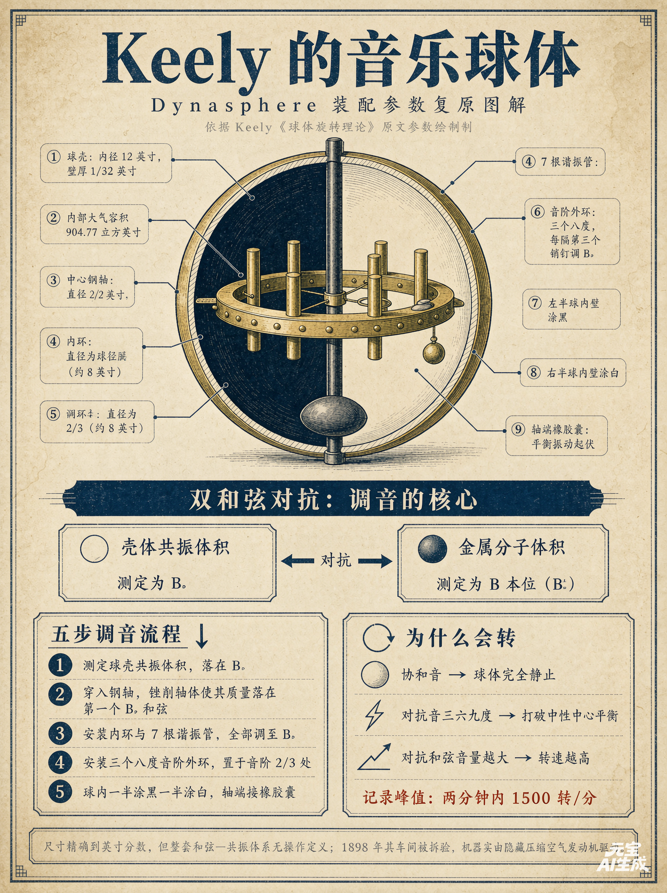
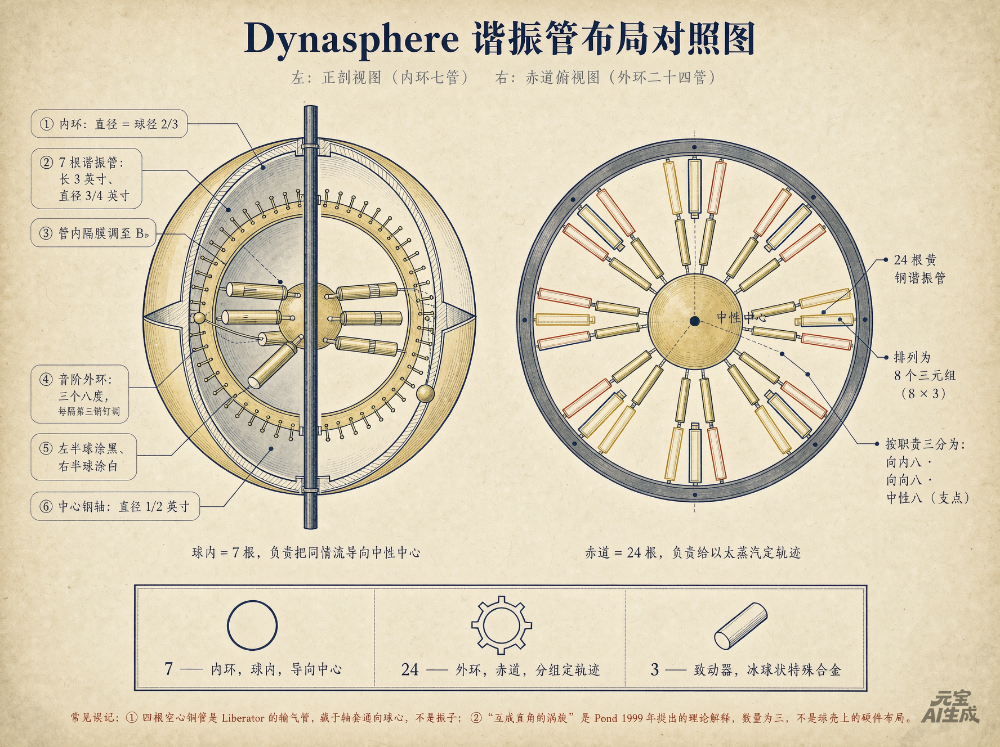
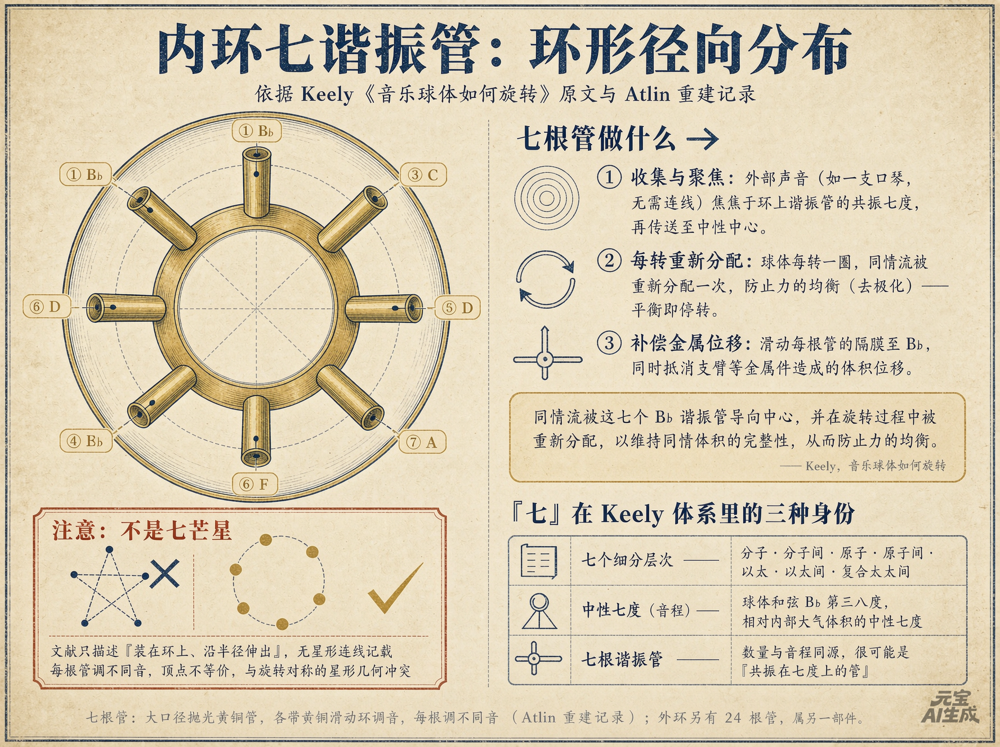

⠿
参数调节 · 拖动可移
−
—
① 尺度桥 · Harshman 反推
② 七音叠加波形
基频 f₀（全页唯一 · 默认 432 Hz ，与图 3 同一个值）
432.00 Hz (A·Verdi) A = 432
B♭4 = 466.16
C = 256
三个锚点：A = 432 Hz （默认 ，Verdi 调律）、
B♭4 = 466.16 Hz （Keely 原文 B♭ 和弦的基音，七音音名锚在它上面）与
C = 256 Hz （Scientific Pitch，频率恒为 2 的幂）。全页只有这一个 基频 f₀，③ 音迹图跟着它走。
⏸ 暂停
七音与球心指针：
异频（七音）
同频（7×B♭）
图 3 横轴窗口
0.5 个基频周期 T₀
1 个基频周期 T₀
2.5 个基频周期 T₀（原默认）
5 个基频周期 T₀
10 个基频周期 T₀
1 个公共周期（七路同时复位）
2 个公共周期
1.00 T₀
单位是基频周期 T₀ = 1/f₀ ，不是公共周期。原来写死的 2.5 没有任何数学含义（见正文图 3 说明）。
②-b 音阶乘法闭合 · 图 3a
▸ 单独编辑 m 个音程比
随机取一个精确闭合排列
当前 7 步（②-b 模式 = 振子数；③ 联动模式 = 振子数 − 1，m 个音之间只有 m−1 个相邻比）
台阶来源：—
下拉换成任意 2:3:5 纯律音程，闭合判定即时重算（分母小字 = 该步音分）：
穷举 {9/8, 10/9, 16/15}
穷举 3-限 {9/8, 256/243}
穷举七音程集合
把这 7 个音送进图 3b 的振子
—
③ pintograph 音迹图（振子数 m 可选：1 – 12）
机器：
线性振子 m=7
单向矢量 k=7
基频 f₀（与图 3 同一个值 · 默认 432 Hz ）
432.00 Hz (A·Verdi) 与 ② 的基频 f₀ 联动为一个全局值 ：拖任一处两处同变（2026-10-16 老师定）。
全页只决定时间尺度 ，形状只由频率比 r 决定 ⇒ 拖它永远不改图形。
振子数 m
1 2 3 4
5 6 7 8
9 10 11 12
m = 7（每振子一个音）
m = 1 / 2 退化成直线段；二维图纹要 m ≥ 3（推导见正文「m 图册」）。
频率方案（对任意 m 都成立）：
原文 B♭ 和弦
纯律簇 2:3:5
12 平均律（白键）
谐波 1…m
奇数谐波
等分八度
🎲 随机取一个精确闭合排列
振子频率表（前 7 槽 = 内环 7 管 ，与图 3 波形共用；双击数值可输入）：
本组 m 个音的重复结构
（同值算简并 —— 不同的比才是独立速率）：
—
相位差 Δ 51.43°
Δ = 360°/m
阻尼 0.00
幅值失衡 0.00
展开外环 24 管频率（8 三元组 × 3 八度）
外环 24 管：原文「三个八度的变格音阶，每隔第三个销钉调到 B♭」
⇒ 每组第 3 根钉在 B♭；8 组的音名 Keely 未给（B− 待定），此处给三个可切换方案。
8 组音名方案：
全音阶（原文）
纯律八音
谐波 1–8
全同基频
④ 双耳声场 · 播放与声源
七音来源（内环 7 个比）· 默认全异频
全异 · 纯律七音（T=24）
全异 · 最小周期 T=15
跟随图 3b
—
播放键默认只响 3 秒然后自动停 ，不是一直响。3 秒不是随便定的：
程序取 最接近且不少于 3 s 的整数个基音周期 （默认 432 Hz ⇒ 恰好 1296 T₀ = 3.000 s，一个采样都不多借），
所以「听多久」与「导出多长」是同一个数。时长框改一下，播放与导出一起变 。
④-b 音频自检 · WAV 导出
🔔 自检音 1 kHz
重新唤起音频
未播放
自检音绕过全部音乐链路 ，直连输出端点：听到「嘀」⇒ 浏览器与系统都正常、问题在本页；
听不到 ⇒ 与页面无关（系统音量／输出设备／预览容器）。状态实时写在上面那格。
导出 WAV ：离线合成，与播放同一套频率与左右声像（归一化到 RMS 0.30），
不依赖网页能不能出声 。默认导出 = 上面那个时长 （整数个基音周期），
文件名会写上周期数与基音频率 ，例如
Dynasphere_内环7_1296T0_3.000s_基音432Hz.wav 。
⬇ 导出 3 s（1296 周期）
⬇ 1 个周期
⬇ 公共周期
—
⑤ 双耳声场 · 几何尺寸（默认值全部取自 SVPwiki 20.02 原文）
⑥ Dynasphere 3D 装配
显示层：
球壳
内环 7 管
赤道 24 管
钢轴
安装姿态：
竖直贴面（佛音钵式）
径向（原文取向）
管长缩放 ×1.00
倾角 φ 0°（竖直）
复位视角
⑦ 同频/异频波场
⏸ 暂停
源数 7 源
振幅显示 ×1.60
⑧ 能量账本
盘半径 R 1.60
波长 λ 0.22
按 yb_07 的 R=2.5λ
PKS 千禧难题 · 02 应用科技 · 25 keely · 交互页 09
把 Dynasphere 拆开：一条 386 飞米的尺度桥，一套 3:6:9 的音程算术，
和一张必须算清的量能账
这一页把 「康普顿波长 × 超导 × Keely 振动几何」 这个主题做成可动手检验的东西，而不是又一篇转述。
三个主题常被并排提到，但它们的物理地位差得很远：音程比与 RMS 正交性是可以严格复算的算术 ，
康普顿波长与超导之间只有一条被质疑的定量线 ，而 Dynasphere 的装配参数来自 19 世纪的记述，没有操作定义 。
本页的规矩是：能算的全部在浏览器里算给你看，不能算的把边界写清楚。
资料来源：Dale Pond / SVPwiki 一线文档（本目录 01–07）＋ 腾讯元宝二次文献对话（08，含 7 张生成图）·
建页 2026-10-15
386 fm
电子约化康普顿波长 ƛC = ħ/me c
晶格常数的 1/997
904.78
Dynasphere 12 英寸壳内含大气体积
π d³/6，壁厚 1/32 in
√(7/2) = 1.8708
七音时间平均 RMS（严格正交）
数值实测见 ③
≈0.92
同频七源盘内总能量 / 七源之和
≈1 ⇒ 能量守恒，见 ⑥
194 dB
推动 1/32 in 黄铜壳可见形变所需声压
10⁵ Pa，见 ⑦
154×
水里举起 6 oz 实心黄铜球所需声压 ÷ 空化阈
15.4 MPa vs 0.1 MPa，见 ⑥·四
上面六个数没有一个是抄来的：k2–k6 由本页脚本实时算出，k1 是常数定义值。
③ 与 ⑥ 两节会给出可复算的推导与实测对比。
先立规矩（贯穿全页）： 本页把三样东西并排放，是为了看清它们的边界 ，不是说它们是一套理论。
A 级 · 严格计算可复算 音程比、七连乘闭合、公共周期 24、RMS = √(7/2)、能量账 ≈ 0.92、194 dB 量级换算 —— 这些是算术，任何人都能推翻或确认。
B− 级 · 正规期刊但有争议 Harshman–Fiory 的康普顿散射配对模型（Λ ≈ 2ƛ_C，31 种超导 ±1.4 K）。
C 级 · 历史记述无操作定义 Dynasphere 的全部装配参数与 3:6:9 三流的物理含义（Keely 1898 年去世后车间被拆验，实为压缩空气驱动）。
① 尺度桥：一个对数尺把三个世界摆在一起
三者的尺度差得非常远：康普顿波长 386 fm 、晶体学晶格常数约 3.8 Å 、Dynasphere 球内径 304.8 mm ，
中间差了 十二个数量级 。先把这个跨度摆出来，后面所有"能不能共振/能不能匹配"的问题才有一个诚实的起点。
图 1 · 长度对数尺（点任意刻度看换算）
横轴为长度（米，对数），从普朗克长度到 10 米。蓝点是量子/晶格尺度，橙点是 Keely/Dynasphere 的工程尺度。
点一个刻度 ，下方读数条会给出它与 ƛC 、晶格常数的比值。
—
该长度 ÷ ƛC （386 fm）
比值越大越远离量子尺度
—
该长度 ÷ 晶格常数 3.85 Å
以晶体学尺度为参照
读法：ƛC 与晶格常数相差约 997 倍 。所以"康普顿波长与晶格几何共振"这类统一图像，
在尺度上就对不上 ——这是本页最重要的一条边界，后面不再重复。
② 康普顿波长 × 超导：只有一条真实定量线，而且它有争议
在整个文献里，把康普顿波长与超导联系起来的唯一 定量关系是 Harshman 与 Fiory 的康普顿散射配对模型 ：
两个电荷库之间靠虚光子的康普顿散射促成电子配对，于是最优转变温度写成
kB ·Tc0 = e²·Λ / (ℓ·ζ) ， Λ ≈ 2·ƛC ≈ 0.007465 Å
其中 Λ 是耦合长度（取约化康普顿波长的两倍）。模型对 31 种以上 铜基/铁基/钌基/有机超导体拟合到 ±1.4 K ，
并外推出高压 H3 S 的 Tc0 = 198.5 ± 3.0 K（实测约 200 K）。
但必须同时记住：Alexandrov 与 Zhao 曾专门发文，指其对同位素效应的重新解释"在数学和物理上不正确" 。
它在正规期刊发表，但远未被主流接受为配对机制 —— 所以本页给它 B− 。
图 2 · Harshman 关系的反推器（拖 Tc ）
二次文献把界面超导的普适常数写作 β = 1.933·e²·ƛC /kB = 1247.4 K·Å² ，形式为 kB Tc = β·λ²。
于是给定 Tc 可反推出该材料需要的特征长度 λ = √(Tc /β)。
请注意下面读数的量级 ：反推出的 λ 是几十皮米 ，比电子康普顿波长 2.43 pm 大一个数量级，
比晶格常数小两个数量级 —— 这正是"Λ ≈ 2ƛC 是耦合常数里的系数，而不是几何匹配"的含义。
—
Λ = 2ƛC 的位置
0.007465 Å（耦合系数，非几何）
⚠ 二次文献里 β 的量纲常见笔误（K·Å 与 K·Å² 混用）。本页按 kB Tc = β·λ²、β = 1247.4 K·Å² 使用，
未取得 Harshman 原文核对 ，标 B− 。上面这一页能算的都算给你看，不能核的明说。
为什么热超导与声子超导里根本找不到康普顿波长
不是因为"没人想到"，而是量纲上就没有那个尺度 ：
热导量子极限 g₀ = π²·kB ²·T / (3h) 只含 h，不含任何质量 D 与费米能 EF ，声子是无质量集体振动 C = h/(me c) —— 必须有质量 m
检索层面的结论也一致：没有任何研究把康普顿波长用于热超导或声子超导材料 。
与 Keely 几何公式的关系同样要谨慎：SVP 圈子把"超导"挂在嘴边，实为把中性态/以太态比喻 成超导，
与康普顿波长没有任何定量关系。真正在主流物理里成立的类比有两条，但都不是材料设计公式：
超导光子因迈斯纳效应获得有效质量、其康普顿波长对应伦敦穿透深度；以及 BCS 相干长度 ξ₀ = ħvF /(πΔ)
与 λ = ħ/(mc) 的形式同构 （相干尺度 ∝ 1/结合能，对应 Δ ↔ mc²）。
一句话结论
康普顿波长与超导的定量联系，只存在于 Harshman–Fiory 这一条被质疑的模型里，而且是以耦合常数的形式出现 ；
与 Keely 的 3:6:9 几何公式之间没有 定量关系 —— 一个是有量纲的时空尺度，一个是纯音程比例的算术，
结构上就接不上。
③ 七音叠加：音程比是算术，"相乘"不是
Keely 的"三分六分九分"落到可计算层面，就是一组纯律音程比。以 B♭ = 1 为基音：
两个干净的结论（都是纯算术，A 级）：
音阶自身的乘法结构闭合 ：六个相邻音程比连乘 = A ÷ B♭ = 15/8 = — （精确）；
再乘一个 16/15 回到高八度 = 2.000000 （精确）—— 这是音阶的首尾闭合恒等式。
而且这不是唯一解 ：见下面 图 3a ，只要七个比的“素数计数”满足 Σ3 = Σ5 = 0，无论怎么排列都精确闭合 —— 仅用 {9/8, 10/9, 16/15} 就有 210 种 ，七种教会调式全在其中。公共周期 = — ：每个纯律比的最小整数复位周期是
1 / 8 / 4 / 3 / 2 / 3 / 8（B♭→A），取最小公倍数 = 24
⇒ 七个音要 24 个基频周期才同时复位一次，球心每 24 周期收到一次"同步起振"。
还有一个更硬的结论：七个不同频率的波长时间平均下完全正交 。每路振幅都是 1 时，
时间平均 RMS 精确等于 √(7/2) = 1.870829 ，意味着"平均意义上是 ×7 不是 ×49"；
频谱里只有 7 条谱线，没有和频、没有差频、没有新频率。
图 3 · 七音叠加：波形、球心幅度与 RMS 实测
细线为七路分量，粗线为球心处的线性叠加 ；绿竖线是慢放播放头 ，
绿点 = 该时刻的球心瞬时幅度，与下方读数 w1 同源。下方读数里的 RMS 是本页真去采样实测 的
（在公共周期 内取 48000 个点，公共周期由七个比实时求 lcm 得到，不再写死 24），
与理论 √(7/2) 并列显示 —— 对不上就说明哪里错了。
横轴窗口可选 （浮窗「图 3 横轴窗口」）：单位是基频周期 T₀ = 1/f₀ 。
原来写死的 2.5 个 T₀ 没有任何数学含义 —— 它只是"够看"的随手值：能让人看到基频重复了两次半、
但每一次的形状都不完全一样（因为七路还差着相位）。现在给了五个档：
0.5 / 1 / 2.5 / 5 / 10 个 T₀ ，另外两个是真正的物理长度 ——
1 个公共周期 （= lcm(各音复位周期) × T₀，默认纯律七音下 = 24 T₀）：只有走完这么长，
七路才同时 回到 0 相位，波形与起点逐位重合；2 个公共周期 则是"再来一遍"的重复性检验。
1 个 T₀ ；
想看"七音到底要多久才重新对齐"，选 1 个公共周期 。改 f₀ 只改 ms 刻度与慢放倍率，形状按定义不变
（真正改形状的只有音程比 ——默认用 §3 的纯律七音，公共周期 24；
勾选浮窗「七个比跟随图 3b」后，图 3 与图 3a / 图 3b 共用同一套七比，
此时在 ②-b 换调律 / 点「送进图 3b」/ 双击改单管频率，波形形状立刻跟着变 ）。
—
实测时间平均 RMS
理论 √(7/2)=1.870829
—
实测峰值 / 单路峰值
理论完美对齐 7，实测约 6.3
—
已走过的公共周期数
公共周期 = lcm(各音复位周期)/f₀
图 3a · 音阶乘法闭合探索器：m 比连乘 ⇒ 2n （m 与图 3b 振子数联动，1–12 可调 ；组合在右侧浮窗「②-b」里切换，也可直接跟随 ③ 的 m 个振子比 ）
上面那条 15/8 × 16/15 = 2 不是巧合。把每个音程比写成 2p ·3q ·5s
（Keely 体系只有 2、3、5 这三个素数），m 个比连乘就变成指数相加 = 2Σp ·3Σq ·5Σs 。
要落回纯八度 2n ，充要条件是 Σq = 0 且 Σs = 0 ，此时 n = Σp（必须为整数）。
闭合只取决于 m 个比怎么计数，与排列顺序完全无关 （乘法交换律）。左图是 m 步台阶（横轴 = 累积音分），
右图是三个素数的指数账户 —— 3 与 5 的账一归零，就精确落在 2n 上，一个音分都不差。
m 个音 + 1 个闭合音 ⇒ m+1 个音点、m 个比（前 m−1 个是音阶内相邻比，第 m 个是"回到高八度"的闭合比）。
m = 7 就是本节表格 A ÷ B♭ = 15/8、再乘 16/15 = 2 的那一套 ；
把 m 改成别的数（浮窗③「振子数 m」或下方「穷举步数 m」），台阶自动重排、判定即时重算 —— 不再写死七个音。
台阶从哪来（2026-10-17 新加 ）： 两处参数都能驱动它，谁最后动谁说了算 ——
① 浮窗「②-b」的十个调式预设 / 🎲 / 单步下拉 / 穷举「载入」⇒ 用你选的那套比；
② 浮窗「③ pintograph」换频率方案（原文 B♭ 和弦 / 纯律簇 / 谐波 / 奇数谐波 / 等分八度 / 🎲）、
换三音和弦、或双击频率表改某一管 ⇒ 台阶当场换成这 m 个振子比的「相邻比」
（m 个音之间只有 m−1 个相邻比，所以台阶数 = 振子数 − 1，浮窗里那个「当前 N 步」会跟着变）。
浮窗顶部那行灰底字就是台阶来源 ：绿边 = 来自 ③，蓝边 = 来自 ②-b。
1/1（重复） 的空心圈 = 相邻两个振子同频 （例如原文 B♭ 和弦 1 : 5/4 : 3/2
循环铺 7 管，只有 3 个不同值 ⇒ 7 根管里有 4 个是简并的）。这种零长台阶故意画出来 ——
否则「7 个音只有 3 个不同值」在图上是隐形的。浮窗里另有「重复结构 」一栏把这件事分类：
全同 / 部分重复 / 全异 三档；m = 7 且 7 个两两不同 是最特殊的一类（7 根管各走各的速率、无简并），
所以那一档标红下划线 ，
并报出随机命中它的概率（约 3.9%，2 万次同算法抽样实测）。
—
指数账户 (Σp, Σq, Σs)
Σq = Σs = 0 ⇒ 可闭合
—
与目标的音分误差
1200·log₂(连乘 ÷ 2ⁿ)
闭合时才标橙 ）
穷举：到底有多少种「7 步回到 2n 」的组合？
上面那条"只与计数有关"的结论可以直接穷举验证：给定音程候选集合，把 m 步的计数 （每种比用几步）全部枚举出来，
挑出 Σq = Σs = 0 的那些，再把每个计数的排列数 m!/(∏ci !) 累加 —— 就是"能精确闭合的 m 音音阶总数"。
按钮在右悬浮窗「②-b」（本卡片里也放了一组同名按钮），结果打到下面这张表；每个方案后面可以一键把它载入上面那张图。
计数 而不是逐条音阶：因为闭合与顺序无关，同一计数的所有排列结论完全一样，
只需再乘一个多项系数 m!/(∏ci !) 就得到音阶条数。这样 Km （候选 K 项、步数 m）的枚举量被压到千余次。
穷举步数 m ＝
1 2 3 4
5 6 7 8
9 10 11 12
穷举 {9/8, 10/9, 16/15}
穷举 3-限 {9/8, 256/243}
穷举七音程集合
与浮窗「振子数 m」联动为同一个值 ：改这里，图 3b 的振子数同时切换。
表里三种底色 = 三类行，别看数字，看底色：
淡红底 + 红字 ＝ 全互异、且能精确闭合 ：m 步踩 m 种互不相同的音程，每种只用 1 步，
连乘恰好回到 2n 。（闭合 ⟺ 表里 Σq = Σs = 0。） 淡灰底 + 左侧灰条 ＝ 全互异、但 不闭合 ：它有 m 种互异音程，
可 Σq 或 Σs 不为 0 ⇒ 连乘落在 2n ·3Σq ·5Σs 上，永远回不到八度 。
这类行「载入」以后能看，但图 3a 的终点与起点必然分离 、图 3b 的公共周期只能按最佳有理逼近取窗。白底 ＝ 闭合，但音程被重复使用 （排在第二段）。
⚠ 灰行不是每次都出现 ：只有 m < K（候选项数）时全互异方案才多于 1 种，才有"闭合 / 不闭合"的分歧。
m = K 时 C(K,K) = 1 种，且它恰好闭合 ⇒ 整组只有标红一行，没有灰行 ，这属于正常；
m > K 时鸽笼原理 ⇒ 一种全互异方案都没有。想看灰行，把上方「穷举步数 m」调小一档即可。
🔴 淡红那类的典型一条（m = 7）：
9/8 × 1 + 10/9 × 1 + 16/15 × 1 +
5/4 × 1 + 6/5 × 1 + 4/3 × 1 + 3/2 × 1
—— 七个比全不同 ⇒ 连乘 = 22 = 4，精确闭合，它的排列数 = 7! = 5040。
C(K, m) 决定（候选中挑 m 个、各用 1 步；K = 候选音程个数），
m = K 时恰好只有 1 种 （你举的正是这一种）；m > K 时由鸽笼原理一种都没有 。
加起来才是 C(K, m) ：红的是其中侥幸闭合的少数，灰的才是全互异方案的绝大多数。
还没有跑。点上面（或浮窗里）的「穷举 {9/8, 10/9, 16/15}」开始。
图 3b · pintograph 音迹图（振子数 m = 1…12 可选 ；每个振子 = 一个音；频率方案可切；m = 3 时浮窗多出「三音锁定」 ）
画法取自 harmonograph/AAA_pintograph三相探索台.html 的两类机器（z = Σ ak ·sin(2πfk t + kΔ)·ei·kΔ ），
频率槽换成 Keely 原文的调律规则 （已逐句核对 SVPwiki 20.02 原文与「三个数学素数」章，见本页 §8 证据表）：
基频 C = 256 Hz （Scientific Pitch）—— 原文「在产生音符时只使用了三个数学素数，即 2、3 和 5 」
⇒ 全部音程都是纯律有理比，十二平均律的 21/12 与 √2 在这套体系里不存在 ；
内环 7 管：原文「每个谐振器都设置在 B♭ 的【和弦】上」 ⇒ B♭ 大三和弦 1 : 5/4 : 3/2 ，
7 根管按此三音循环（不是七音阶，也不是七管同频）⇒ 公共周期 lcm(1,4,2) = 4 ，精确闭合；
外环 24 管：原文「三个八度的【全音阶】（whole tone scale）」 ⇒ 纯律全音阶
C D E F♯ G♯ A♯ = 1 : 9/8 : 5/4 : 4/3 : 3/2 : 5/3，8 组 × 3 八度；
「每隔第三个销钉调到 B♭ 」⇒ 每组第 3 根钉在纯律 B♭(=1×高八度)。公共周期 lcm(1,8,4,3,2,3) = 24 。
每根管的频率都能在右侧浮窗里单独改（双击数值） ，相位差 Δ、阻尼、幅值失衡同样可调；
振子数 m 在 1…12 之间可选 （图 3b-bis 给出 m 的图纹规律），并且有
「🎲 随机取一个精确闭合排列」 （从 2:3:5 限音程里随机抽 m 个有理比 ⇒ 必然存在公共周期）。
m = 3 专用：三音锁定 （在浮窗里 m 的下方，只有 m = 3 时才出现 ）——
音程比 与振幅比 可以各自独立 地选「锁」或「不锁」。
锁的语义是钉住 ：切方案按钮、🎲、改 m 再回来，都不会把这三管冲掉。
音程比一键取自 Keely 和谐比库（14 项，全部是 2a ·3b ·5c ） ：
从 1 : 1 : 1 （三管同度 ⇒ 按本节「同频定理」退化成正圆 ）一路到 1 : 3 : 5 （最宽一档），
中间含纯律大三和弦 4 : 5 : 6 （＝原文「B♭ 的和弦」1 : 5/4 : 3/2）、小三和弦 5 : 6 : 8、
三素数本身 2 : 3 : 5 、以及原文幂级数 1 : 3 : 9 。
没有一个无理比 ⇒ 这 14 项每一项都精确闭合 ，读数面板的「闭合误差」恒为 0 ——
正好反衬出 12 平均律那一档为什么会分开。
振幅比锁定后可一键取「等幅 1 : 1 : 1」或「a ∝ 1/r」（高频管幅值小），也可直接填 a₂、a₃。
形状由音程比 r 决定，f₀ 只改每周期的时间长度 ⇒ 单改 f₀ 图形形状不变、只有周期（毫秒数）变；
要改形状请改各管的 r。
十二平均律 的频率（如 261.63），该管就引入无理音程 ⇒ 闭合残差必然非零，
读数会显式标成「近似闭合」。Keely 原文方案下永远是精确闭合。
散点该怎么"非线性分布"？（本节的核心）
为什么均匀不行 ：按 t 等距取点，点的屏幕间距 ∝ |dz/dt| 。而这些音迹图在
中心原点附近 |dz/dt| 极大 （曲线在那里拐急弯 / 打尖），在外圈极小 ——
同一套等距 t，外圈几个像素就走完，中心一段跨几十像素 ⇒ 中心必成折线 。
这是"复杂一点的图都是折线"的唯一原因，不是画法分辨率不够。
正确做法 = 让采样密度 ∝ 局部曲率 ：本图用递归中点细分 ——
先把一周切成 n₀ 段，再对每段反复对半细分，直到
①弦长 ≤ maxLen 像素 （控屏幕间距）且 ②中点到弦的距离 ≤ tol 像素 （控弯曲误差）。
满足即停，否则继续二分（深度有上限）。结果点列在 t 上严重非均匀 ：
外圈平缓处几十点就够，中心尖点处自动加密到几十倍。
落笔也要配合 ：所有折线段合成一条 Path 一次 stroke （而不是每段单独 stroke），
并开 lineJoin/lineCap = round ⇒ 接缝处不会有"一节一节"的毛刺。
按时间上色时改成 96 条色带 、每带一条 Path，同样只 stroke 96 次。
可自查 ：浮窗「画质」切到均匀采样（旧做法） ，对比同一张图中心与原点的锯齿；
右下角实时显示实际落到画布的折线段数 。自适应档位：快 / 精细 / 极致
（对应 tol = 1.10 / 0.35 / 0.16 像素）。
两张图用完全相同的频率比与取景 ，只换采样策略 ⇒ 差异全部来自"点怎么分布"
—
方向角数 / 归一化弧长
方向角互不相同的个数 / 复杂度
振子 音 频率比 r 频率（f₀ = 466 Hz） 振幅 a 相位差 k·Δ 方向角
怎么读这张图： 每根细彩线是一个振子 在时间 t 的位置（z = Σ ak ·sin(2πfk t + kΔ)·ei·kΔ ），
连起来就是合成笔尖的轨迹。七个音都存在，但没有一个音"看起来像自己" ——
这正是 §3 那条结论的几何版本：七音叠加只做加法，能量与相位都不相乘。
相位差 Δ = 360°/m （pintograph 探索台的规则：奇数振子时每相地位等价），
此时 m 个方向角 0°, 360°/m, 720°/m … 互不相同 ，对称阶拿满。点「Δ = 360°/m」可一键回到这个值。
120° （三相默认值），方向角会退化成 3 条线 （0/60/120）——
那不是 bug，是"对称阶受限"的直接体现；本图默认不走这条。
切换调律： 该管引入无理音程时，起点（蓝点）与终点（橙点）分离，中间橙色虚线长度 = 闭合误差。
图 3b-bis · m 图册：m = 1…12 的音迹图纹，以及它随 m 变化的规律
（机器 = 全页唯一那个开关，默认单向矢量 ；换机器整册重绘，图 3 / 3b / 3c 一起变）
同一个机器、同一套频率方案，只改振子数 m，图纹怎么变？下面 12 格全部由本页实时算出
（不是贴图）。默认方案取 等分八度 rk = (m+k−1)/m —— 它让 T = m ，
即「m 个振子恰好要 m 个基频周期才闭合」，是 5 个方案里唯一"m 与 T 同步"的家族，最适合看规律。
三条实测结论（都在本页运行时可复算）：
m = 1、2 是退化档 ：轨迹是一条直线段 （半长 = m/2）。
m = 2 时 Δ = 180°，两支同相相消掉虚部，所以也退化成线 ⇒ 二维图纹要 m ≥ 3 。
同频定理 ：把 m 个频率取成完全相同 ，不管 m 多大，轨迹只有两种 ——
m ≤ 2 是直线，m ≥ 3 是一个正圆，半径恰为 m/2 （实测偏差 ≤ 3×10−15 ）。
推导：z = (1/2i)[ Σk ei(ωt+2kΔ) − Σk e−iωt ]，
后一项 = −m·e−iωt ，前一项 = m·δm|2 （m ≥ 3 时归零）。
⇒ 图纹全部来自「各音频率比 r 不相同」，m 本身只决定尺度 ——这是 §3「叠加不产生新频率」的几何版。
花瓣数随 m 线性增长 （等分八度族）：花瓣（|z| 径向极大数）≈ 4(m − 1) ，
外接半径 ≈ m/2 + 0.16（下表逐行可核对）。m 从 3 到 12，花瓣 10 → 14 → … → 44，斜率恒为 4 。
⚠ 这一串数是「线性振子」下的 ：切到单向矢量 时每槽变 2 个振子、径向周期减半，
花瓣约减半到 m − 1 （下表会跟着重算，别拿旧数对新表）。
但"复杂度"会饱和 ：归一化弧长（轨迹总长 ÷ 外接圆周长，正圆 = 1）
在等分八度族上 m=3 时 2.37、m=6 时 3.98、m=12 时 4.81 —— 先快后慢、趋于 ~4.8 的天花板 。
也就是说 m 调大只是把图形"撑大 + 填密"，并不产生新的花样 ；
真正换花样的是频率方案 ：同 m=7 下，谐波族弧长仅 ≈1.95（薄薄一层），
而纯律簇 T=24 时弧长高达 ≈14 （毛线球），B♭ 和弦族 T=4 时 ≈2.7（疏朗的链环）。
⇒ 要"好看"，先选对频率方案，再调 m。
m 的"可用档位" ：m = 1、2 退化（线性振子 ：直线段；单向矢量 ：m = 1 是正圆、
半径恒定 ⇒ 花瓣数无定义，表里记「圆（无花瓣）」）⇒ 实际有图纹的是 m = 3…12 共 10 档 ；
其中 m = 3…6 图形疏朗易读，m = 7…12 逐步填密；配合「画质 · 自适应」就不会糊成折线。
想看到"丝滑的闭合图纹"，两个条件必须同时满足 ：频率比是有理数（⇒ 精确闭合）且
T = lcm(各比复位分母) 别太大；并且 采样必须曲率自适应（否则 T 一大就全是折线）。
m 公共周期 T（基频周期） 花瓣（|z| 径向极大数）
触心（|z| 极小且 < 0.35·max） 归一化弧长（复杂度）
内孔 / 外径 外接半径
③·数 全异要几槽才能「一周期」闭合？——13 音池上的穷举
浮窗里那一格说的是「这 m 个比里有没有重复」。这一格问反过来的事 ：
如果强行要求两两不同 （全异），最少要几个周期 才能首尾闭合？「一个周期」到底容得下几个音？
q = 复位分母 ；整组的公共周期 T = lcm(q₁, …, qm ) ，单位是基频周期。
T = 1 就是「走完一个基频周期，整幅图纹自己回到原位」。
本页 13 个比，只有 8 种 复位分母（括号里是各分母上有几个比）：
引理 · T = 1 的充要条件
T = lcm(q) = 1 ⟺ 每个 q 都等于 1 ⟺ 每个比都落在 {1, 2}（同度与八度）。
定理 1（一周期上限） ：全异且 T = 1 ⇒ m ≤ 2 ，且实现唯一 —— 1 : 2 。
想在一个周期里闭合，最多只能放两个音，而且只能是八度。 第 3 个音一进来，最少就要
2 个周期
定理 2 · m 槽全异的最小周期（阶梯）
下表不是举例挑的 ，是穷举：把 13 个比的 C(13,m) 种全异组合逐个算 lcm，取最小值。
「达到最小 T 的组合数」一列说明这个最小值有多难碰上 —— 组合总数据 C(13,m)，不是概率。
全异槽数 m 最小周期 T 一组能达标的实现
达到最小 T 的组合数 全异组合总数 C(13,m) 其中 T ≤ 48
（运行时穷举中…）
—
定理 3 · 本页门槛 T ≤ 48 下的天花板
本页随机抽样只接受 T ≤ 48（再大图就密到看不清）。在这个门槛下，全异最多只能到 9 槽 ；
而满足 T ≤ 48 的组合只有 3 种 （最小 T = 30 ）。
换句话说：「7 个音全异」已经很难，但若还想 T 小，就得同时挑对分母集合。
反查 · 给周期上限，全异最多几槽
—
读数提醒（不写这几句容易读反）
阶梯不是「一个个往上加音」。 m = 7 的最优组合里故意没有 3/2 ：
一旦引入 q = 2，周期直接翻倍；这个 2 倍一直要等到 m = 9 才值得付。同度（1）与八度（2）的 q 都是 1，不推高周期。 所以 m = 7 与 m = 8 的最小 T 相同
（都 15 「达到最小 T 的组合数」是计数，不是概率。 它只说「有多少种选法」，不涉及抽样权重；
本页的随机是放回 抽 (可重复)，与这里的 C(13,m) 口径不同，别混。T 小 ≠ 图好看。 谐波族 T = 1，可图形只是薄薄一层（§③ 归一化弧长 ≈1.95）；
纯律簇 T = 24 反而最花（≈14）。T 只决定闭合快慢，不决定图案丰俭。
口径 ：以上全部是本页这 13 音池 上的穷举结论，不是普适定理 。换池子结论立刻变 ——
池里加一个 7/4，分母出现 7，T 至少 7；把 3/2 拿掉，m = 3 的最小 T 就从 2 跳到 3。
要用到别处，请连池子一起搬 ，别只搬结论。
③·旁 五套「七」并排：跨发明家的分层，不是同一种分层
「七」在这条研究线上反复出现：Anu 原典的七级 spirillae、Keely 的七维体系、Leadbeater 的 E1–E4（含固液气共八层）、
以及近年 Swaruu 材料里的「以太」。名字都带「七/八」，梯度方向也大致相同 —— 但只要并排放，
就会发现它们回答的是四个不同的问题 ，混着用就会出事。
第五个成员，但它不是一套观测体系，而是一把标尺 ：Hexaflake （六边形雪花）。
它和 Anu 一样是「一块分成七块、每块再分七块」，可它是纯几何构造 ，所以能给出一个精确的、
其它四套都给不出的数 ——盒维数 D = ln7/ln3 = 1.771244 。
有了这把尺子，才第一次能把 Anu 的「七级细分」拿去量一量 ，见下面图 3t-b。
图 3t · 四套「分层」的形状对比（左三套是阶梯，最右是场）
同一高度标尺下：Anu 是「同一条丝再细分七次」 ，Leadbeater 是「物质拆到底的层级」 ，
Keely 是「振动的自由度」 ，Swaruu 的不是阶梯而是连续场 。
形状差异本身就是判据 —— 凡是要「一格一格对齐」的对照，碰到右图就必然失真。
Anu · spirillae
Leadbeater · E1–E4
Keely · 七维
Swaruu · 以太
7 阶
6 阶
5 阶
4 阶
3 阶
2 阶
1 阶 · 1680 匝
每级再分七次
气
液
固
E4
E3
E2
E1
（更底层）
由什么构成
维 7
维 6
维 5
维 4
维 3
维 2
维 1
几个自由度（互不隶属）
连续场
（没有「第几层」）
梯度只是密度
不是台阶
在哪里计算
体系 层数 分层回答的问题 依据级别 本页/本项目里的落点
Anu 原典 · spirillae 7 级
同一条丝在空间上再细分七次 （1680 匝逐级 ×7；E1→E2=7³→E3=7²→E4=7 形态）原文层（Leadbeater/Besant 观测记录）+ 1680 = 8!/24 = 7!/3 数值成立
anu 主界面 · 本页 ③ 的「七」的来源之一 Leadbeater · Occult Chemistry E1–E4（+固液气 = 8）
物质「由什么构成」的阶梯 （拆到底还剩什么）原文层（1908）· 属观念史，非物理测量
图 3t 第二列 Keely · 七维 / 六力 7 维
振动有几个自由度 （互不隶属，不是大小之分）原文层（Keely 1880s 讲义）· 术语与现代「维」不同义
本页 ③ 的音程体系、④ 的装配复原 Swaruu · 以太 无层（连续）
「在哪里计算」的信息场 （梯度是密度，不是台阶）C 级 · 近年二手材料，无可核原始数据图 3t 第四列（只作对照，不作证据） Keely · Dynasphere 装配 7 内环 + 24 外环
实物怎么装 （几何与音程的物理实现）本页 ④ 复原 · 图纸相对比例，非绝对尺寸
本页 ④ Hexaflake · 六边形雪花 （第五个：不是体系，是标尺） 任意 n 级n=1 就已 7 块
「七叉细分之后，还剩下多少空间」 ——把「七级」翻译成一个可计算的数 （盒维数）A 级 · 纯几何构造，D = ln7/ln3 = 1.771244 严格可复算图 3t-b（本节）· Anu 页「分辨率 · 最多看得见几级」
并排之后得到的三条判据（这才是并排的价值）：
先问「七回答的是哪个问题」 ：是空间细分七次 （Anu）、物质有七种层级 （Leadbeater）、
七个独立自由度 （Keely），还是七种装配 （Dynasphere）？四个问题的答案不能互相代入。四套观测体系里，只有 Anu 那一套可以被数论钉住 ：1680 = 8!/24 = 7!/3，这是本页唯一能写成等式的「七」。
其余三套的「七」是观测归纳 或设计选择 ，没有闭式。
有闭式，但不是数论而是几何 （D = ln7/ln3），
而且它是造出来的 ，不是看出来的 —— 所以它只能当尺子用，不能当证据用。「七」不等于「八个减一个」 ：立方体 8 顶点 / 八卦 8 卦是 3 bit；正四面体 4 顶点是 2 bit 但几何更优
（等距、等角、2-传递、最小间距最大）。要 8 还是要 7，取决于你要「存得多」还是「读得准」 —— 这是选型问题，不是信仰问题。
口径提醒（引用时必须一起带走） ：上表六行里，只有 1680 匝 = 8!/24 、7³=343 / 7²=49
与 ln7/ln3 = 1.771244 属「数值成立」。
Swaruu 一栏是 C 级对照 ，不得当作物理证据；Leadbeater 与 Keely 是原文层 （有其文本，但不等于已被现代测量证实）。
本页 ④ 的装配复原也是相对比例 ，不是实测尺寸。
Hexaflake 那一行是纯数学构造 ，它不是「某位研究者观察到的分层」，把它排在表里只是为了提供一把尺子 。
图 3t-b · 第五套（不是体系，是标尺）：七叉细分 —— 「七级」到底是不是分形？
把一块正六边形按 1/3 缩放摆成 7 块 （中心 1 + 六邻 6），再对每块重复 —— 这就是 Hexaflake 。
它和 Anu 的「七级 spirillae」是同一个动作 ：一块分七块、每块再分七块。
差别只在形状（Anu 那边七块是绕在上一级最后一匝上的七根螺旋 ，这里是六边形）。
正因为 Hexaflake 是纯几何、可无限写下去 ，它才第一次把「七级」换算成一个数 ：
盒维数 D = ln N / ln(1/r) 。
细分级数 n ：面积按 7/9 逐级缩水（每次挖掉 2/9 ），
但永远缩不成点、也铺不满面 —— 那条「不缩成点」的边界，就是 D > 1 ；
那条「铺不满面」的边界，就是 D < 2 。
细分级数 n 2 级
n = 3（343 块）
n = 4（2,401 块）
n = 5（16,807 块）
0.604938
面积保留率
(7/9)n → 0，但永不为 0
1.771244
盒维数 D = ln7 / ln3
与 n 无关（自相似）
—
3 px 判据下最多看得见
再细分就只能看见「一片灰」
上面这条数轴是同一把尺子 量出来的四个点。唯一「量出来的」（而不是算出来的）那个是 Anu 2.584467 ——
用 Anu 自己的逐级半径比 ρ = √(1+(π·fill)²)/T（fill=1、T=7 ⇒ 0.4709869 ）代入同一公式。
它落在 2 与 3 之间不是巧合 ：7ρ² = 1.5528 > 1（面积上装不下）而
7ρ³ = 0.7313 < 1（体积上填不满）⇒ 介于面与体之间是被这两条不等式逼出来的 。
—
七分规则 每级块数 N 缩放 r 盒维数 D = lnN/ln(1/r) 7r² 7r³ 结果
Hexaflake （挖空 2/9）7 1/3 = 0.333333 1.771244
0.7778 0.2593 真分形：面积 → 0，边长 → 0，维数夹在 1 与 2 之间 七等分填满平面 （√7） 7 1/√7 = 0.377964 2.000000
1.0000 0.3780 不是分形 ：7r² = 1 恰好守恒 ⇒ 就是普通二维铺砌Anu 七级 spirillae（本级尺） 7 ρ = 0.4709869 2.584467
1.5528 0.7313 介于面与体之间：空间上留空 ，但比 Hexaflake 密得多 七等分填满体积 （7−1/3 ） 7 0.522758 3.000000
1.9129 1.0000 不是分形 ：7r³ = 1 恰好守恒 ⇒ 就是普通三维填满
并排之后第一次能说清的一句话：「七级」本身不含维数信息，维数由「每级缩多快」决定。
同样的 N = 7，D 可以从 1.77 一直到 3 ：唯一决定它的是缩放率 r。所以
「Anu 细分了七次」这句话不足以推出任何几何结论 —— 必须同时给出 r。Anu 的 r 是「匝刚好相接」逼出来的，不是选的 ：ρ = √(1+(π·fill)²)/T，
fill=1 时 ρ = 0.4709869 。代入得 D = 2.584467 ——
这是本页唯一一个从建模条件算出来、而不是从原典抄下来 的维数。判据换成两条不等式，就不怕别人抬杠 ：7ρ² > 1 说明七块在面积上重叠，
所以它不可能是二维铺砌 ；7ρ³ < 1 说明七块在体积上留空，
所以它也不可能填满三维 。两条一起就锁死在 2 < D < 3。「能不能看见」与「存不存在」是两件事 ：n = 5 时单块屏上只有 1.6 px，
已经退化成一个灰点 —— 但这不表示第 5 级不存在 ，只表示屏幕分辨不出来 。
换算见另一页：Anu 页「分辨率 · 最多看得见几级」
口径（三条，缺一条就会变成过度声称） ：
D = 2.584467 是把「Anu 七级 spirillae」当作自相似集 来读的推论 ；
Leadbeater/Besant 原文只写了「七级、一级比一级细」 ，没有给缩放率 ，也没有提分形。
匝刚好相接（fill = 1） 」；把 fill 拖到 0.5，ρ 变成
0.2660137，同一个公式给出 D = 1.469490 —— D 随 fill 变 ，所以它不是 Anu 的固有常数。
造出来的 数学对象，不是 「某位研究者观察到的分层」。
它在表里排第五，只承担「尺子」这一个角色 ，不构成任何历史或物理证据。
顺带一个纯算术的并置（是巧合的并置，不是因果 ）：Keely 体系反复用 3 / 6 / 9，而三进制在信息容量上确实有优势 ——
同样是 12 位，312 = 531,441 而 212 = 4,096 ，差 129.7 倍 。
但这是「三态比二态能装」的算术必然，不能反过来证明 Keely 知道三进制 ；同理，也不能用 3:6:9 去反推 qutrit 的设计。
③-b 把自己放进球心：双耳在球心的实时听感
前面所有计算都是"上帝视角"。这一栏换一个视角：假设你站在 Dynasphere 的球心，双耳相距一个可调的距离，
七个谐振管是七个声源，它们分布在离你 某个半径 上，
而整个球的半径也可以调 —— 然后按下播放，直接听这七个纯律音在球内织成什么。
图 3c · 双耳在球心 · 七音实时声场（可听，左右声道）
左边俯视剖面（球壳圆 + 声源 + 一对耳朵 + 每条路径的传播时延）；右边是送进你左右耳的合成声 。
双耳走真正的立体声 ：每一路音按它到左/右耳的距离分别算 1/r 衰减与传播时延，
再按 ITD / ILD 分别给左右耳不同增益 —— 所以你听到的方位来自几何 ，不是来自频率变化。
内环 7 管 （七音）／外环 24 管 （8 三元组 × 三个八度）／两者叠加 。
基音可自由设定（432 Hz、256 Hz 等）。
「七音来源」 三档，默认「全异 · 纯律七音」 ——
七个比两两不同 （全异频）。选它有个硬理由：该档的公共周期整除 1296（= 3 s × 432 Hz）
⇒ 3 s 播放仍是整数个公共周期 ，一个采样都不多借。另可切
「全异 · 最小周期 T=15」 （③·数 里 7 槽全异的最优组，此时 1296 不是 15 的倍数，时长会照实凑到 1305 T₀）
或「跟随图 3b」 （旧默认：Keely 的 B♭ 大三和弦，七根管里只有 3 个不同频率）。
—
一个能自己验证的硬结论（页面实时算）： 半径 R 的球腔，简正频率是
fnlm = (c / 2πR) · xnl ，其中 xnl 是球贝塞尔函数 jl (x) 的零点。
对 12 英寸（内径 304.8 mm）球壳，最低模态约 — Hz ，
而当前这档七音覆盖 — Hz （— ）。
—
驻波 ，而离散音能否喂出驻波，只取决于「有没有音正落在模态上」 ——
频段是否跨过模态线只是必要条件，不是充分条件。这与 §3「异频 ⇒ 不形成稳定驻波」是同一条结论的两种说法，方向一致。
（球贝塞尔零点用公认表值 4.4934 / 2.7437 / 2.2466 / 2.0287 / 1.9124…，属数学常数，可查 A&S 9.1；本页不重新求解，避免自造数值。
★ 换「七音来源」会改七音上限 —— 原来默认是 Keely 的 B♭ 和弦（上限 648 Hz，整段在最低模态 685 Hz 之下），
现在是全异 · 纯律七音（上限 810 Hz，跨过 了模态线），所以这句结论不再写死，改成按当前档位实时判。）
模型边界（必须说清）： 这是自由场球面波 + 简化头影 + 指数混响 ，
不是 真实房间脉冲响应。真实球腔需要按球贝塞尔模态叠加做卷积合成，
浏览器端可用 ConvolverNode 近似，但本页用的是可解释、可调、可听懂的链路
（延迟 + 增益 + 立体声分离），这样每个物理量都对得上公式。
没有给出 24 根管各自的确切频率 ；本页按"8 个三元组 × 三个八度"建模，
属设计推演（B− 级） ，不是原文复原 —— 原文只给了数量与调律方式。
听不到声音怎么办： 浮窗「④-b 音频自检 · WAV 导出」里给了一条两步判定链 ——
① 点自检音 （绕过增益/声像/压缩/混响，直接接输出端点）：听到"嘀"⇒ 浏览器与系统都正常，
问题在本页链路；听不到 ⇒ 与页面无关。② 点导出 WAV ，用系统播放器放同一份混音：
播放器有声而网页没声 ⇒ 浏览器或预览容器在拦；两边都没声 ⇒ 输出设备或音量。
接缝为零的判据 ：
所有分音在 T 内都走完整数个周期
—— 每个音的相位都恰好转回 2π 的整数倍，下一段才能原样接上。
默认内环是 Keely 的 B♭ 和弦
1 : 5/4 : 3/2 （七根管里 3 根同频 ⇒ 只有三个比），于是：
（这里说的是 图 3b 的默认 PIN7。⚠ 图 3c 的内环默认已改为
全异 · 纯律七音 ——七个比两两不同，公共周期不是 4，下面这套 12 T₀ 的算法只归三音循环那一档 ，
别套到图 3c 上；图 3c 该用哪个数，面板与画面左上角都按当前档位实时算。）
12 T₀ 正好闭合
三个音分别走 12 / 15 / 18 个周期，全是整数
证明（纯算术） ：令 T = n·T₀，其中 T₀ = 1/f₀ 是基音周期。
第 i 个音的频率 fₕ = rₕ·f₀，它在 T 内走过的周期数是
Nₕ = fₕ·T = rₕ·n 。闭合 ⟺ 每个 Nₕ 都是整数：
4 的倍数
2 的倍数
n 必须是 4 的倍数 。
而 12 = 3 × 4 ，满足这个条件 —— 所以 12 T₀ 正好闭合，
代入即得 12 / 15 / 18 三个整数。
最小的闭合周期是 4 T₀ （此时 4 / 5 / 6），
12 T₀ 不是"最小"，只是 4 的第 3 个倍数；凡是 4 的倍数都闭合。
n ＝ T / T₀
三音走过的周期数
闭合
对应哪一档
1 1 / 1.25 / 1.5 ✗ 1 个周期导出（接缝反例，残差 178.5°） 4 4 / 5 / 6 ✓ 最小闭合 · 面板「公共周期」8 8 / 10 / 12 ✓ 4 的第 2 个倍数 12 12 / 15 / 18 ✓ 12 T₀ 正好闭合（本行就是上面标红那句的算式） 1296 1296 / 1620 / 1944 ✓ 默认 3 秒导出（432 Hz × 3 s = 1296 = 4 × 324，正好是 4 的倍数 ⇒ 三个音同时回零）
⚠ 别和 24 T₀ 混用 ：那是纯律七音（七个不同比） ，也就是图 3c 现在的默认 ，
分母是 1 / 8 / 4 / 3 / 2 / 3 / 8 ，lcm = 24 ；
这里只有三个比 ，分母是 1 / 4 / 2，lcm 只到 4 。
两个数对应的是两套不同的声源，不是谁对谁错 —— 面板会按当前声源实时算出该用哪一个。
"相乘"被否定的最硬证据： 线性叠加只做加法。平均意义上是 ×7 而不是 ×49；
只有每 24 周期一次的瞬态尖峰才接近 ×49。Keely 真正宣称的 ×9 / ×81 倍增机制在 Trexar 的银金铂节点上，
而
实现频率倍增必须靠非线性介质 —— 空气在常规声压下线性（偏差约百万分之一），要到
约 160 dB 以上 才显著，
该装置里不存在这样的介质。
附带结论：七音
不同频 ⇒ 球面内不会形成
锁定不变 的驻波花纹（图样会一直漂），时均场只剩 1/√r 几何扩散那点形状。
Keely 所说的"Nodal Ring / Shell"要有物理对应，前提是七音
同频 —— 这是体系内没法两全的地方。
（球内壁的反射与干涉在 09b 球腔声场 里是完整算的；那里能看到异频时花纹确实"胖"掉、不再锁形。）
④ Dynasphere 音乐球体：可拖动的装配复原
这是 Keely 记述里参数最完整的一台机器。下图按原文参数复原：旋压球壳内径 12 英寸、厚 1/32 英寸 ；
内环直径 = 球径 2/3（8 英寸内径） ，环上 7 根谐振管 ，每根长 3 英寸、直径 3/4 英寸，沿半径方向向外伸出；
赤道外环 24 根 谐振管，按八个三元组（8×3）排列；中心 1/2 英寸钢轴 。
按住画面拖动即可转视角 （横拖方位 / 竖拖俯仰 / 双击复位）。
图 4 · Dynasphere 三维装配（12 in 壳 · 2/3 内环 7 管 · 赤道 24 管）
蓝色为壳体线框，橙色为内环 7 根谐振管，绿色为赤道 24 根（分 8 个三元组），灰色为 1/2 in 钢轴。
安装姿态 默认 竖直贴面（佛音钵式） ：管轴 (0,0,1) ，严格与中轴平行 ，
沿赤道圆均布、管身跨赤道面上下各 L/2，赤道 24 管的管轴半径取 Rs − 管半径 使管外壁与壳内壁相切
—— 就是"木棍贴在佛音钵壁上"的样子。「倾角 φ」滑块 把管子绕【赤道切向轴】旋转：φ = 0° 竖直贴面 ←→ φ = ±90° 径向
（径向（原文取向） ：内环 7 根沿半径向外、赤道 24 根沿半径向内），中间值为斜插。
尺寸标注按原文参数等比绘制。
12 in
球壳内径
304.8 mm，壁厚 1/32 in
8 in
内环直径 = 球径 2/3
环上 7 根管，竖直贴面
3 in × 3/4 in
每根谐振管长 × 直径
长径比 4:1
24 = 8×3
赤道外环管数
八个三元组；两种分法并存
# 部件 原文参数 本页的处理
1 旋压球壳 内径 12 英寸、厚 1/32 英寸 ⇒ 内含大气体积 904.77 in³
体积由 πd³/6 实时算出（— ），与原文记述一致 2 共振测定 壳的共振体积 在 B♭，壳体金属分子体积在 B♮；对抗者"从属"于前者
无尺寸可画，只作文字保留（C 级） 3 钢轴 1/2 英寸；穿入造成体积位移，须锉削轴体直到质量落在第一个 B♭ 和弦上
画出轴线；锉削量无数据 4 内环 直径 = 球径 2/3（8 英寸内径）；7 根 谐振管，每根长 3 英寸、直径 3/4 英寸，滑动隔膜调至 B♭
原文记「沿半径方向向外伸出」；本页默认按老师 2026-10-16 的补充画成竖直贴面 （管轴 ∥ 中轴），
7 根等角分布，径向姿态用「倾角 φ = ±90°」一键还原 5 外环 三个八度的变格音阶外环，置于音阶 2/3 处，每隔第三个销钉调到 B♭
赤道外环 24 根，8×3 分组 —— 24 这个数是本页推演，原文没给 （见下节核对表） 6 涂装与轴端 球内一半涂黑一半涂白；轴端接香水喷球式橡胶囊
不建模（涂装为示意、橡胶囊无尺寸）
尺寸核对：哪几个数是原文，哪几个是我们的推演
这一节是逐句对原文 的（SVPwiki 20.02 - Keely Describing Dynasphere Construction，
即本页归档 A6 所引的同一段）。分清楚"原文写了"与"我们补的"，是这套复原能不能被检验的前提。
项 原文（英文原句） 本页默认 等级
球壳 “a spun shell of twelve inches internal diameter , 1/32 of an inch thick ”
内径 12 in、壁厚 1/32 in ⇒ 半径 15.24 cm A 原文 内含体积 “which represents an atmospheric volume of 904.77 cu. in. ”
πd³/6 = 904.7787 in³ ⇒ 页面按 904.78 显示，原文取 904.77（截断） A 原文 中轴 “a steel shaft through its center 1/2 inch in diameter ”
Ø12.7 mm 钢轴，只画轴线 A 原文 内环 “a ring which has seven tubes … the ring being 2/3 the diameter of the globe (or 8" ID) ”
环径 8 in ⇒ 环半径 4 in = 10.16 cm （⑤ 的「声源到球心」默认值） A 原文 谐振管 “the resonators three inches long and 3/4 in. diameter , each one to be set on the chord of B flat ”
7 ×（3 in × 3/4 in），长径比 4:1，调 B♭ 大三和弦 A 原文 外环 “the diatonic scale ring (Outer Ring) of three octaves … set at two-thirds of the scale … graduating every third pin … to B flat”
外环 24 根（8 组 × 3 八度）；位置按"赤道"处理 B 推演 管数 24 原文没有给数字 ，只给"三个八度"与"每隔第三销钉"两条规则取 8 组 × 3 八度 = 24。这是本页的读法，原文不能直接支持 C 推演 "赤道" 原文没有 equator 一词 ，只说 outer ring 在"音阶 2/3 处"按赤道圆排布。这是画法选择，不是原文 C 推演 配重 “weighted on one side of the ring by a small hollow brass ball, holding about two ounces of lead ”
不建模（质量参数无几何意义） A 原文 涂装 / 轴端 “painting the interior … one hemisphere black and one white ”；“a rubber bulb … to the hollow end of the shaft”
不建模，只作文字保留 A 原文
⚠ 一处口径要统一 ：904.78 与 904.77 是同一个数（前者是 πd³/6 的四舍五入，后者是原文写法），
不是两个不同体积。页内凡是"算出来的"一律显示 904.78 ，引原文时写 904.77 。
"24 管"与"赤道"这两个词在本页是推演，不是引用 ：原文只给了"三个八度 + 每隔第三销钉调 B♭"两条规则，
从一个八度 7 个音、三个八度 21 个音再加闭合音推不出唯一的 24 —— 所以图 4 的 24 根只应看作示意性复原 ，
不能当作 Keely 原机的实测数据。
旋转机制反直觉：协和音让它不动，对抗音才让它转
原文记述是：协和音让球完全静止，对抗（不协和）音才让它转 ；黑色半球接收负向三六九度"轰击"，
打破中性中心的平衡，转速正比于对抗和弦的相对音量。1885-05-20 的记录称球体两分钟内达 1500 转/分 ，
退回负向降到 150 转/分时炸掉了两个安全壳 。另一实验用 12 英寸钢盘每两分钟一圈慢转，
分子结构被"激活"到 42,800 次/秒，扯断抗拉两吨以上的绳索。
本页立场： 以上全部记为 C 级 。1898 年 Keely 去世后车间被拆验，
机器实际由地下室隐藏的压缩空气发动机、暗管和钢制储气罐 驱动；
"acoustic superconductivity"一词可追溯到 KeelyNet / Jerry Decker 的自由能源圈子，被标注为伪科学。
"炸掉两个安全壳"那类记录已属化学爆炸级别，不是声学。
辟谣两条常见误读：
"四个振子正交分布在球边"—— 没有。 真实排布是七根（内环）+ 二十四根（赤道外环） ；
"正交"出自 Pond《Keely's Secret Revealed》的三涡旋互成直角 理论（三个自旋轴、七个极，解释分子结构），
数目是三 不是四。"四根管"指的是 Liberator 的输气铜管 （藏在轴套里通到球心），不是振子。
致动器也是三个 （冰球大小）。
"七芒星分布"—— 没有依据。 Keely 原文、SVPwiki、Pond 的 Atlin 建造记录里都只有一句空间描述：
装在直径 = 球径 2/3 的圆环上、沿半径方向向外伸出。"七"的三重身份（七个细分层次 / 中性七度音程 / 七根管）
很容易互相误读 —— 把环形分布读成七芒星，是把"层次与音程上的七"误画成"平面上的七个顶点"。

yb_01 · 12 英寸球壳剖面复原，九项标注全部来自 Keely 记述（元宝生成，B− 图）
yb_02 · 正剖 + 赤道俯视双视图：7 管内环 + 24 管外环
yb_03 · 内环七管环形径向分布 + 七芒星辟谣红框
图源：腾讯元宝生成（2026-10-15），原始附件 keely_声场分析图集.zip 内的 4 张声场图另见 yb_04–yb_07。
这些图是 AI 生成的示意图 ，不是照片；本页的 3D 图才是按文字参数重新计算绘制的。
⑤ 同频 vs 异频：一张图看清"驻波"到底出不出现
球心汇聚的说法只在七个源同频同相 时才成立。下面两幅是同一套源布置（半径 1 的圆周上 7 个点）在
两种情况下的球面截面波场快照，可以直接看到：同频 时图案静止、出现真正的同心节圆（振幅触零）；
异频 时图案随时间旋转漂移，永远不稳定。
图 5 · 球面波场快照（七源，红色 = 正压 / 蓝色 = 负压 / 白 = 零）
左：七源
同频同相 ，节圆稳定不动，中心为持续高压峰；右：七源
异频 （按 ③ 的纯律比），
图案不断旋转漂移。注意右边看不到任何固定的节圆。
本图是"简化版" ：页内按
角向平均的 1/√r 球面波叠加 逐点算，
没有球壳边界 ，
所以看不到"回音"。
完整版（既有边界反射、又有干涉）已拆成单独一页 09b ——
真球腔 FDTD：内壁硬壁反射、球径/介质/源数/源半径/相位差/反射率/阻尼全可调，
还带一张 J
n ′ 模态表与选择定则：
→ 09b 球腔声场：回音、干涉与模态
（拆页理由见 SOUL 铁律 204）。
—
球心幅度（同频同相）
理论 8.573 = 7 × 1.225
—
节圆半径（同频）
r = (n + 1/2)·λ/2 处振幅触零
量 单源 同频相干（7×B♭） 异频（七音）
球心幅度 1.225 8.573 （= 7 × 1.225），持续恒定2.291 时均；仅每 24 周期闪一次尖峰 时间平均 RMS — 持续满幅 精确 = √(7/2)/√R （严格正交）空间结构 均匀扩散 同心节圆（振幅真正触零）+ 七重旋转对称花瓣 图案随时间旋转漂移，永不稳定 功率 1 ×49（局部 ） 无协同增益
⑥ 能量账本：球心那个 ×49 有代价
这是最该看的一张。干涉只做重新分配，不做放大 —— 线性波的硬约束。
下面让页内脚本把七源盘内总能量与七源能量之和的比值算出来，并允许你改盘半径看它怎么变。
图 6 · 同频七源的径向强度剖面与能量账
横轴为到球心的距离，纵轴为强度 ∝ 幅度²。实心点 = 盘内累计能量，虚线 = 盘边界。
账本 ：盘内总能量 ÷（7 × 单源盘内能量），两者用同一个积分、同一归一 。
线性波动方程下这个比值应当 ≈ 1 —— 干涉只重新分配能量，不放大。改动盘半径或波长，比值会小幅漂移。
—
盘内总能量 ÷（7 × 单源盘内能量）
yb_07 图另记 0.921 / 0.924 / 0.925
—
赤道向最深零陷
球心峰之外的死区 —— 代价在这里
⚠ 口径声明（重要） ：本页的账本用角向平均 的 1/√r 球面波模型算，
得到的比值在 1 附近随盘半径缓漂 （不是精确 1）。
yb_07 那张图记的是 0.921 / 0.924 / 0.925，但它的边界条件没有公布 ，
两者并非同源计算 —— 本页不去凑那个数，只声明"同一积分下比值 ≈ 1 量级"这条可复现的结论。
真正的守恒定理来自线性波动方程本身，与具体数值积分无关。
⑥-bis 换一套语言：图案「闭合」是一件事，「维持」是另一件
⑥ 算完了能量账：干涉只重分配、不放大，球心那 ×49 是局部 的、要拿别处的死区去换。
但还有一个更靠前的问题没被回答 —— 这些图案凭什么「维持」？
「驻波」这个词暗含了一件事：系统处在一条闭合的轨迹 上。换成动力系统的语言，
这个问题会被拆成两半，而且两半的答案完全不同 ：
你原来的说法 动力系统里的对应 能问到什么新问题
「七个音按纯律比叠加」 7 个频率张成一个 7 维环面 上的流动
环面闭合吗？ 闭合 ⟺ 有严格周期；不闭合 ⟺ 稠密遍历「图案静止 / 出现节圆」 轨道闭合 、或落在 Poincaré 截面的不动点上
闭合是算术条件 ，与振子本身无关 —— 可以纯算 「驻波维持住了」 这条闭合轨道稳定 （Lyapunov 稳定或渐近稳定）
稳定 不是算术条件，是动力学条件 —— 要另外证、或者另外控制「调律 / 主动维持」 把系统锁 到指定的周期轨道上（OGY 一类的微扰控制）
锁定有代价 ：不是能量，是精度
第一半：环面闭不闭合，是纯算术 —— 而且本页已经算过了
③ 节有一行读数叫「公共周期 = 24 」，它当时是作为「音阶乘法闭合」的副产品出现的。
但换到动力学语言，它其实是环面闭合的充要判据 ：
判据（可复算，A 级）： 设七音的频率是
fi = di ·f₀/24
（
di 是 ③ 表里那一列整数 —— 纯律能写成整数比，正是它能落到这一列的原因）。
要让七路相位
同时 回到 0，需要
τ·di /24 ∈ ℤ 对所有 i 成立，最小正解是
τ闭合 = lcmi ( 24 / gcd(di , 24) ) · T₀
本页按 ③ 表实时算得
— 个 T₀。走完这一段，七路相位才
全部 归零，
图案与起点逐位重合 —— 这就是「能维持成一个固定形状」的
严格 含义。
律制 频率比是什么数 公共周期 图案严格重复？ 本页实测
纯律 （本页 ③ 用的）有理数，通分后是整数 —
— T₀会 ，逐位重合—
十二平均律 2k/12 （k=1…11）全是无理数
不存在 不会 ，只在测度意义下逼近最接近的一对差 — 音分（工程上听不出，数学上永不重合）
为什么 2k/12 一定无理（一行证明）： 若 2k/12 = p/q（既约），则 2k ·q12 = p12 。
左边只有 2 一个素因子，右边只有 q、p 的素因子 ⇒ p、q 都只能是 2 的幂 ⇒ 2k/12 = 2m ，即 k/12 为整数。
0<k<12 时矛盾。这跟精度无关，是数论上的硬边界。
这条判据顺手把 ⑤ 节那句「异频图案旋转漂移」说清楚了 —— 它其实有两种完全不同的「不重复」：
频比有理但公周期很长 （比如把纯律换成一个生僻的七比组合），图案会重复，只是要等很久；
频比无理 （平均律、或任何实测里带小数噪声的频率），图案永远 不重复，
但也不跑掉 —— 它在环面上稠密遍历。「漂移」和「不重复」不是一回事 。
第二半：闭合 ≠ 稳定（这一半才是「维持」真正的难点）
上面全部是算术，一个振子都不用解。但「闭合」只保证轨迹理论上 绕回来，
不保证它待得住 。这两件事在数学上是独立的，而且分三种情况，结论完全不同：
系统类型 闭合轨道稳不稳 「驻波」靠什么维持 对应本页哪一节
线性 · 无阻尼 中性稳定 （Lyapunov 稳定，非渐近）不需要维持 —— 振幅恒为初值，这是本征模态的定义
09b 的球腔 FDTD（线性波动方程） 线性 · 有阻尼 渐近稳定 （衰减到零）要持续供能 补偿损耗；但这是「驱动」，不是「控制」
真实球腔（有声吸收） 非线性 · 大幅 通常不稳定 （闭合轨道多为 UPO）要主动微扰控制 ：OGY、延迟反馈……
下面这个演示
★ 这一节对本项目最重要的一个（负面）结论，必须写在前面： 线性声学里的驻波不需要任何控制 —— 它无条件待得住。所以
「Keely 主动调谐维持和谐力」这个说法，在线性声学框架内是多余的 。
它唯一可能成立的位置 是表格最后一行：介质或振幅进入非线性区，闭合轨道退化为 UPO。
换句话说：「需要主动维持」这件事本身，就是「非线性」的一个可观测判据 。
非线性证据 。这不是修辞，这是逻辑上的必要条件。
下面这个演示是为了让你亲手摸到「最后的代价」。用的是 Hénon 映射 （a=1.4, b=0.3）——
一个只有两行、每步只需一次乘法的离散系统，它的吸引子是混沌的。在这个吸引子上有一条周期-8 轨道 ：
8 步之后精确回到原处，但它是不稳定的 。下面同时跑两条：不控制的，和用 OGY 微扰压住的。
为什么用 Hénon 而不是 Dynasphere？ 因为它能被完整算出来 —— 8 个点、两个特征值、一条控制律，
全部在本页实时求解，不引用任何论文数字。它不是 Dynasphere 的模型（见本节末的口径声明），
它只是「闭合但不稳定」这件事最小的、能跑起来的样本。
图 6b · 闭合但不稳定：一条真周期-8 轨道，和把它按住的 OGY 微扰
左 ：Hénon 吸引子（灰点云）+ 周期-8 轨道（绿色空心圈 ，8 个点由牛顿法实时解出）
+ 当前状态（橙点 =自由混沌 / 绿点 =已被压住）。
右 ：不稳定方向上的分量 |αu | 的对数时间线 ——
自由时它按 |λu | 倍逐周期放大（锯齿状上冲），
一旦落进稳定域就被按到低位。灰线 = 未施加控制，绿线 = 正在施加。
δ ：它其实是执行器的能力上限 （参数 a 一次最多能改多少）。δ 越小，稳定域越窄，
要等越久才遇上「够近」的时刻 —— 这就是精度代价 。
「抓住」的判定口径 ：连续 8 个周期 都压在稳定域内才算。
只判单周期的话，「擦边而过」会被误记成「已锁定」（实测等待周期数会谎报成 1/3）。
所以曲线上会看到几段短的绿色下探 （单周期被压住又弹出来），那不算抓住。
控制增益上限 δ
0.020
重新开始
踢一脚（推离轨道）
自由混沌
—
不稳定乘子 λu （每 8 步）
f⁸ 的 Jacobian 主特征值
—
当前稳定域 |αu |c
= δ·|gu |/|λu |
这个演示补上的，正是 ⑥ 缺的那一半「代价」。两半要一起看：
⑥ 的能量代价 ：要 ×49 的球心峰，就得接受别处的等量死区。总量守恒，一分不多。 这里的精度代价 ：要把系统压到一条闭合轨道上，先得等它自己漂到足够近
（|αu | < δ·|gu |/|λu | ）。
这个窗口的宽度与 δ 成正比、与 |λu | 成反比 ——
系统越混沌（λu 越大），对执行器的要求越苛刻 。这是指数级 的代价，不是线性的。
δ 开得太大并不会更快 —— 控制律实际需要的瞬时量有天然上界
（由 |λu | 与 |gu | 决定，不由滑块决定），
超出那部分执行器能力是闲置 的。所以这个滑块最有用的区段在小端 ，不是大端。
⇒ 合起来才是完整的「没有免费午餐」：能量上不能放大，控制上不能廉价。
Keely 那套「20,000 → 1,620,000 是净增益」的说法，两条都过不去。
口径声明（这一条必须和演示一起读）：
这是「方法层迁移」，不是「数值层迁移」。 Hénon 与 Dynasphere 没有定量关系 ：
前者的周期-8 是 2 维离散映射的结果，后者是 7 个连续振荡频率。
本节能搬过来的只有概念结构 （闭合 / 稳定 / 控制 / 代价四件套），搬不过来任何数字。「周期 8」与「八个音」只是同名，不是同构。 8 这个数在这里来自 Hénon 的动力学，
在那里来自 ③ 表里 8 个音点（7 音 + 1 闭合音）。不能因为都叫 8 就画等号 ——
这正是 ③·旁 那节反复警告的同一种错误。λu 、λs 、稳定域、等待周期全部是本页实时算的 （牛顿法 + 特征值 + 有限差分导数），
不引用任何二手材料的数字。二手渠道里流传的「点间距 0.267 / δ 超过 0.133 就抓不住」
与本页口径不同，本页只报自己算出来的值。线性声学不需要这一整套。 如果你的介质是线性的（09b 就是），上表第二行直接给出「无条件稳定」，
本节的控制部分用不上 。这一点比演示本身更重要，别反过来用。
⑥-bis 补 · 现实材料里的同一个判据：魔角石墨烯的平带
上面第 4 条说「线性介质不需要这一整套」。那么反过来 ——
什么条件下必须请出非线性？ 现实里有一个干净的答案，2026 年的实验已经把它做实了。
两层石墨烯相对转 1.1° （魔角）时，狄拉克锥被折叠成一条平带 ：
有效费米速度 v* → 0 ⇒ 带宽 W → 0 ⇒
库仑能与带宽之比 U/W → ∞ 。
单粒子（线性）图像的分母被抽掉了 ，于是体系不会「什么都没发生」，而是被相互作用整个改写 ——
半填充处出现关联绝缘体，两侧冒出超导穹顶。这就是「线性失效」在真实材料里的样子。
决定性实验（可作本页判据的外部支撑） ：曼彻斯特大学 2026（PRX）在魔角石墨烯
上方 0.3 nm 处放一层可调转角石墨烯作屏蔽层。开启屏蔽后超导被完全抑制、Tc 掉一个数量级以上、
关联绝缘态同时消失 。而电声（声子）机制在屏蔽下应该基本不变 —— 于是电声配对被直接排除，
剩下的是电子-电子相互作用 。⇒ 「必须用非线性/相互作用」这一条，有实验背书。
口径（不许混） ：
① 这是一个无量纲判据 W/U 跨过 1，与本节的 Hénon 数字毫无关系
—— 那边的 λu ≈33.45 是相空间里一条不稳定流形的拉伸率，这边的 W 是能带宽度，两者不可代入。
② 同构的只有一句话 ：「线性项被关掉 ⇒ 必须换非线性语言」。
③ 本节讲的是人为施加控制 去压住混沌；魔角讲的是体系自带 强关联。
一个是「把系统按回轨道」，一个是「系统自己换了一套语法」，方向相反，别搞混。
→ 完整推导、10 个迭代版本与另外五条跨页对照（φ 是唯一能当魔角放大倍数的贵金属比 /
「逐级 ×7」不是分形的维数判据 / 尺度级联守恒律 / 拍频恒等式 / 十二重准晶）：
魔角石墨烯 · 归档入口与跨页联系（六条对照）
（跨项目链接，绝对路径；本地双击可开，预览面板受目录根限制）
⑥·ter 把 Keely 的「净增益」放回线性声学天平上
振动次数：正常分子振荡
20,000 次/秒 → 胶木槌敲 Chladni 盘
180,000 （
×9 = (9/3)² ）
→ 从金节点起算
1,620,000 （
×81 ），并且明确说是
净增益 。
—— 归档 A6 / 08_元宝对话_康普顿波长与Keely振动几何 转述的 Keely 原文口径
这一节只做一件事：把这三个数放回能算的坐标里 。三句话——
① 算术没错，但它是频率之比 ，不是能量之比；
② 线性声学下方波叠加最多把能量搬 到球心，搬多少就要在别处留下多少空；
③ 想要"净"，必须开第二个能量入口，而装置里没有那样的介质。
6t.1 算术：三个数之间的关系
阶梯 比值 写成 3 的幂 它说的是什么
20,000 → 180,000 ×9 3²
(9/3)² = 9 —— 这一步只是把 3 乘了两次 ，与"能量放大"无关 180,000 → 1,620,000 ×9 3²
同一句话再说一遍；连起来是 ×81 20,000 → 1,620,000 ×81 3⁴ 这才是"总倍率" ：81 = 9 × 9频率 → 能量（若真是能量） E = h·f ⇒ ×81
—
⚠ 这一步要求振幅不变而频率升 81 倍 ，也就是输入功率必须跟着升 81 倍。
换言之：要拿到 81 倍，得先付 81 倍 ，收支相抵后净增益为 0
6t.2 三种「增益」必须分开说，混在一起就没法判
类型 定义 上限 本页实测 / 结论
① 频率比 单位时间内的振荡次数之比（cps）
不限 Keely 那三个数属于这一类 。它只是"跑得快了"，不产生能量 ② 局部幅值增益 焦点处声压 ÷ 单源声压
N （幅值）N² （强度）本页 7 源实测：球心 ×7 幅值、×49 强度 —— 见下表。这是真的 ，
但它是"搬过来"的，别处必然出现等量死区 ③ 净能量增益 输出能量 ÷ 输入能量 > 1（COP > 1）
线性系统：恒 ≤ 1 Keely 声称的是这一类 ，而这一类在线性声学里不可能 ；
要做只能进非线性，见 6t.3
线性叠加的硬账：p总 = Σ pi ⇒ 能量 ∫|p总 |² = Σ∫|pi |² + Σi≠j ∫pi pj * 全为正 （这就是 ×49），但它在球内别处必须变负 ，
把总账拉回 Σ∫|pi |² 。腔体有耗时，稳态储能由 E = P入 /κ 定死，
与源怎么排布无关 ⇒ 多一个源只多一份输入，不会多出一份能量 。
6t.3 160 dB 是什么概念：非线性门槛的量化
反方常拿"非线性"当出口。可以，但先把门槛算出来 —— 空气的非线性（波形陡化、谐波滋生）
大约在 160 dB SPL 量级才开始显著，即声压约 2 % 大气压 。
量 数值 算法
160 dB 对应的声压（rms） 2,000 Pa 20 µPa × 10160/20 = 2 × 10⁻⁵ × 10⁸ 占大气压的比例 1.97 % 2,000 / 101,325 对应声强 9.69 kW/m² p²/(ρc)，ρc = 1.204 × 343 = 413 Pa·s/m 12 in 球内壁总面积 0.2919 m² 4πr²，r = 0.1524 m 维持该声场所需的声功率 ≈ 2.8 kW 9.69 × 10³ × 0.2919
也就是说：光是"进入弱非线性"这一脚门槛，就要往 12 英寸的球里灌接近 3 千瓦的声功率 ，
还没开始谈增益。而且非线性给的是混频与波形畸变 （把能量搬到谐波上），不是放大器——
要真放大，必须有一个泵浦波 持续供能，也就是第二个能量入口 。装置的清单里没有这一项。
6t.4 频率这一侧的物理约束：1.62 MHz 走不出几厘米
频率 空气中波长
大气吸收 α（估算） 12 in 球内能装几个波长
20 kHz 17.15 mm 0.08 dB/m 17.8 λ 180 kHz 1.91 mm 6.1 dB/m 160 λ 1.62 MHz 0.212 mm ≈ 490 dB/m
走 20 cm 掉 98 dB 1,440 λ
α 以 40 kHz ≈ 0.3 dB/m 为锚点按 f² 外推（20 ℃ / 50 % RH 的量级估计，不做精确值使用）。
1.62 MHz 不可能是"球腔里的空气声波" ：在这个频率上，空气里的声波走几厘米就衰减殆尽。
它只能是固体中的声子 或分子内振动 —— 那已经换了介质、换了机制，
不能再拿"声学"两个字来担保，也就谈不上"把声能放大"。
结论（三句话）：
×3² · ×3² = ×3⁴ = ×81 的频率比 ，算术无误；
把它读成"能量净增 81 倍"则多跨了一步，而这一步没有物理依据。
×49 的局部强度 ，
代价是别处的等量死区，总能量一分不多 。想在球心拿到 1,620,000 倍，得先有
√1,620,000 ≈ 1,273 个相干源 —— 装置里只有 31 根。
≈ 2.8 kW 的声功率（160 dB）与一个泵浦源 。
Keely 的记述里既没有这个功率，也没有这个源。
6t.5 尺度提醒：比值略小于 1 不是损耗
图 6 的账本算出来常常是 0.99x 而不是 1.000，容易被读成"有 1 % 的损耗"。
它的真正来源是数值方法的边界 ：模型用的是角向平均的 1/√r 球面波，
在圆盘边界 处直接切断，边界那一圈既没算上"墙外的能量"、也没算上反射回来的部分，
于是积分结果系统性偏低。
判据一 ：把盘半径 R/λ 拉大 （相当于把边界推远），这个偏差应当单调变小 。
真的损耗不会随积分域变大而消失，数值误差才会。判据二 ：换一套解析可积 的源分布（例如单个点源在整个球内积分），
比值必须精确等于 1 ；若也偏小，问题就出在离散化而不在物理。结论 ：这不是真损耗 。真正的守恒定理来自线性波动方程本身，
与"用多大的盘子去积分"无关 —— 也正因为如此，它不能反过来被用来支持"存在净增益"。
6t.6 一条越界的类比：胶子能当"第二个能量入口"吗？
「向外（夸克相互排斥）和向内（胶子）—— 胶子可能和第二个能量入口有关系吧？」
—— 老师 2026-10-17 就 6t 第 ③ 句提出的追问
先给判断：方向对了一半，机制对错了 。胶子确实是"向内"的那一半，
它也确实是非线性 的来源；但它向内的是势 ，不是流 ——
而第 ③ 句要的是流。势可以搬能量，流才能注能量。
这一小节放在这里不是要把 6t 变成物理漫谈，而是把第 ② 句与第 ③ 句的分界线 画出来。
（1）先把"向外"这个词校准一下
老师的说法 标准 QCD 的说法
差在哪
夸克"相互排斥"
色单态里的 q q̄ 是吸引的 ：V(r) ≈ −4αs /3r + σr（Cornell 势）
符号反了。"排斥"不是胶子给的；真要找向外撑的力，那是费米子动能 （泡利原理），不是色力 "向外"
是外力在拉 ，不是内禀排斥；直觉里的"越近越松"是渐近自由 —— αs 随 r→0 变小
（αs (MZ ) ≈ 0.118 vs αs (1 GeV) ≈ 0.47，差约 4 倍 ）
"越近越松"是真的，但它描述的是耦合强度 ，不是"有一只手往外推" "向内（胶子）"
对：长距离由线性项 σr 主导，σ ≈ 0.18–0.19 GeV²（√σ ≈ 424–440 MeV）。
这就是禁闭 ：拉得越远，拽得越紧
这一条站得住 ，也是本节唯一可以直接借用的部分
于是"向外 / 向内"不是两股方向相反的力，而是同一根绳子的两端 ：
绳子越近越松（渐近自由），越远越紧（禁闭）。张力 σ 只有一个 ，
不存在"向内的胶子"和"向外的排斥"两套独立机制可以互相借力。
（2）那份能量早就记账了：它不是"入口"，是"账单"
这一点可以现场算。把弦张力乘以质子半径，问它跟质子静质量是什么量级关系：
σ = (0.440 GeV)² = — GeV/fm （或 σ = 0.180 GeV² = — GeV/fm） p = 0.8409 fm（CODATA 2018 质子电荷半径） · mp = 0.938272 GeVp = — – — GeV
÷ mp = — % – — %
（页面实时计算）
结论不是"有 8 成能量可以开采"，恰恰相反 ：这部分能量与质子静质量同量级 ，
而能量记账的唯一凭证就是惯性质量 —— 它既然还在，就必然已经计入 mp 了。
它是账单，不是余额。 想把它取出来，就得把质子拆开；而拆开要付的功
（弦被拉断、生成新的 q q̄ 对）不少于 取出来的能量 ⇒ 净增益 ≤ 0。
这一条与 6t 第 ② 句是同一件事的两种说法 ：
「搬多少就要在别处留下多少空」⟷「拉断弦付的功变成新强子，取不回来」。
胶子只是把"空"换了个地方记，没有把"空"变小。
（3）可算的判据：沿闭合回路做功是不是 0
"能不能当第二个能量入口"，不必靠感觉，有一个硬判据 —— ∮F·dl 。
保守场绕一圈做功为零，那就只能重分配 ；要净注入 ，力必须非保守（时变、带相位）。
候选机制 保守场？
∮F·dl 能不能当第二入口
胶子线性势 σr（+ 费米子简并压） 是（静态势） 0 否 。两者之和仍是势能地形；而且平衡态是最小能量态，抽不出东西球腔简正模态、七音干涉 是 0 否 。这就是第 ② 句：只搬，不注参量泵浦 （ωp = ωs + ωi ）否 （时变驱动）≠ 0 是 。这才是第 ③ 句在数学上的样子
注：费米子简并压那一条只影响第 1 行的措辞，不影响判据 ——
简并压也只由密度决定、与路径无关，同样 ∮ = 0。
（4）那这个类比到底对上了什么？—— 对上"非线性"，没对上"入口"
QCD 里胶子自己带色荷 ，胶子之间也耦合（SU(3) 非阿贝尔），
这是 QCD 全部非线性的来源。这一层确实对得上 "进入非线性"那一步 ——
但它提供的是混频与谐波 ，不是能量。
对应的声学量是空气的非线性参数 B/A ≈ 0.4 。两者的差别正好可以量化：
色荷是 O(1) 的荷（耦合本身就很强），而空气的非线性项是
O(B/A) × 马赫数 M ，要到 O(1) 得 M → 1 （近冲击波）——
这正是 6t.3 那个 160 dB / 2.8 kW 门槛的另一种写法 。
换句话说：胶子类比帮你找到了非线性的位置，但找不到能量的来源。
所以，回答老师的那句"有关系吧"：
有关系，但方向相反 ：胶子是"天花板"（把势能曲线抬起来），不是"地板上的洞"（可抽取的能量入口）。
想找第二入口，正确的方向是参量过程 ，要三个条件同时成立：
泵浦源 + 非线性介质 + 相位匹配 。声学里它真的有 —— 参量阵（两个强超声在空气里混频出差频）
就是商用产品；但它的"净"来自泵浦，而泵浦的电费永远比输出大。
Keely 装置里唯一像"泵浦"的候选，是 Liberator 的那根输气铜管 ：
气流是非相干 的能量输入，等价于一个 DC 偏置；DC 偏置 + 非线性 = 参量放大的必要条件。
这一条不是结论，是判据 —— 它能被设计成实验：有气流 vs 无气流，看同一位置的增益差 。
若两者无差别，则连泵浦这一项也不成立。
⑥·四 三个球在水缸里：整条线索上唯一一次能被算清的演示
⑥·ter 的结论是「装置里没有第二个能量入口」。这一节从另一个方向 核同一件事，用的是整条线索上
唯一一次「力 × 位移」被记录下来、而且被目击者用可量化的词描述过的演示 ：
40–42 英寸的玻璃水缸、三个 6 盎司金属球、奏一个音、对应那个球缓缓升到顶。
为什么偏偏这次能算清？因为声悬浮这件事在现代有完整的解析理论（Gor'kov 1962 / Yosioka–Kawasima），
而「要多大的声压才能举起一个给定密度差的球」这个问题的答案只依赖密度差和波长，与球的大小无关 ——
这条漂亮的化简让 1890 年的定性记述第一次落进了定量坐标。
6q.1 先把「水」这一条钉死（老师在这里对过一次、也错过一次）
三份互不依赖的来源，都写明缸里装满水、球沉在玻璃底上。这一条不是推测 。
来源 原文（逐字） 级别
Snell 手稿 / SVPwiki 17.18
"glass chamber, 40 inches in height, filled with water … Three metal spheres, ~6 oz each, rested on the glass floor"
A · 原文 Cheiro 1890 目击记
"Three glass chambers, forty inches in height, filled with water … three metal spheres weighing six ounces each"
A · 原文 Apergy（《科学美国人》增刊）
"A cylindrical glass vessel, forty-two inches high, containing iron weights of several pounds each, is filled with water , and covered with an iron lid"
A · 原文 导线接哪儿
Apergy 明写线接的是缸盖（cover / iron lid） ，Cheiro 也写线连的是玻璃缸（chambers） 。
没有任何来源说球上有孔或接口。
A · 原文
Apergy 那一版装的是铁砝码，每个好几磅 （不是 6 盎司球）——同一类演示的另一种版本，
后面的 6q.6 会单独说它，因为它是整套记载里最难解释的一处。
6q.2 把「6 盎司」变成一个单参数族：质量是已知量，几何全未知
6 盎司 = 170.1 g 。这是唯一一个被反复记录、可以被拿来做计算的数。至于直径、壁厚，
我查过 Snell 手稿、Cheiro 目击记、《科学美国人》1899 年的拆验报告和 SVPwiki 全站——
只记质量，直径与壁厚一个字都没有 。
所以正确的做法不是猜一个直径，而是把质量固定，让密度当自由参数 ，整族几何就自动出来了：
V = m / ρ̄ · a = (3V / 4π)1/3
· 净重 W = (m − ρw V)·g
· 翻转它需要的水下体积 V气泡 = W/g（以 cm³ 记）
平均密度 ρ̄ 排水体积 半径
水中净重 翻转所需气泡 这一档是什么东西
7.85 21.7 1.73
148.4 148 实心黄铜 —— 一整团气泡，肉眼不可能漏看 4.50 37.8 2.08
132.3 132 厚壁空心，仍然一眼看穿 1.50 113.4 3.00
56.7 57 薄壁空心，气泡已是一小把 1.05 162.0 3.38
8.1 8.1 近中性，气泡只剩一小簇 1.005 169.3 3.43 0.85 0.85 临界：净重不到 1 克力，气泡几乎看不见
表里最后一行那个 3.43 cm 有名字：acrit ——170 g 的东西要沉底，排水体积就必须小于 170 cm³，
于是半径必须小于 3.44 cm。这给了一个与任何解释都无关的硬上界 ：不管球是实心、空心、还是什么别的东西，
它的半径一定 ≤ 3.44 cm 。
图 6q-1 · 42 英寸水缸剖面 + 声压需求尺（拖两个滑条）
左边是 Apergy 记述的几何：42 英寸玻璃缸、装满水、铁盖、铂线接在缸盖 上（红线标注，不是接球）。
三个球沉在玻璃底，各自的「质量弦」写在球下。右边是一把对数声压尺 ，从 2 kPa（空气里 160 dB 声悬浮的水平）
到 100 MPa。改滑条，球的实际尺寸和它「若要被声压举起」所需的声压会实时移动。
读图三件事：① 三个球质量相同（各 6 oz），质量弦却各不相同 ；② 球上没有任何接口、没有孔；③ 导线接的是缸盖 ，不是球。
平均密度 ρ̄
—
驱动频率 f
—
跳到实心黄铜
跳到临界（1.005）
—
半径 a（由 m 与 ρ̄ 定死）
a ≤ 3.44 cm 是硬上界
—
若为黄铜空心：壁厚 h
h = m/(4πρa²)
—
所需声能密度 Ē
Ē = 0.4·Δρ·g·λ/2π
—
6q.3 「蓟花绒毛」这个词，是一条可量化的约束
目击者的原话是运动 "as gentle as that of a thistledown floating in air" 。
这句话常被当成修辞，其实它是一条硬约束——因为它可以用上升水流拖曳 反算：
½·ρw ·Cd ·πa²·v² = W ⟹
v = √( 8Δρ·a·g / (3ρw Cd ) ) ，Cd = 0.47（球，Re ≫ 10³）
平均密度 ρ̄ a (cm) 净重 (gf) 维持它上升所需的流速 观感
7.85 实心 1.73 148.4 2.57 m/s 剧烈湍流，缸里会翻江 4.50 2.08 132.3 2.01 m/s 明显扰动 1.50 3.00 56.7 0.91 m/s 可见的上升流 1.05 3.38 8.1 0.31 m/s 轻微 1.005 3.43 0.85 0.10 m/s 轻柔 ✓
由「轻柔」反推，只有一条路活下来： 净重必须极小 ⇒ 球必然是接近中性的密封空心球 ⇒ a ≈ 3.4 cm、壁厚 1–2 mm 。
没有用到任何关于 Keely 的假设 ——它只用到 170 g、水、Cd ，和目击者那一个形容词。
6q.4 声辐射压够不够？独立复算：差 154 倍
小球的声辐射力（ka ≪ 1，驻波）有一个干净的上界。用 Gor'kov 势对硬球取 f1 = f2 = 1，
令 Fmax 等于净重，a³ 在两边同时约掉 ：
Fmax = (10π/3)·a³·k·Ē = (4π/3)·a³·Δρ·g
⟹
Ē = 0.0637 · Δρ · g · λ （与球的大小完全无关 ）
再用一个已知的现代装置校准这个公式：20 kHz 的空气里悬浮水滴 。
Δρ ≈ 999、λ = 343/20000 = 17.15 mm ⇒ Ē = 0.0637×999×9.81×0.01715 = 10.7 J/m³ ；
而 160 dB SPL（prms = 2000 Pa、p₀ = 2828 Pa）在空气里对应 Ē = p₀²/(4ρc²) = 14.1 J/m³ 。
余量 1.32 倍 ——实验室声悬浮确实是"刚好够"，这跟实际经验吻合。公式站得住。
这一格我自己先算错过一次，记在这里： 第一次复算时我把分母写成 (ρc)² 而不是 ρc²，得 11.7 J/m³，
还反过来质疑元宝那轮的 14.2。14.1 才是对的 （波腹处、峰值声压口径）。
一并说明口径差异：若取空间平均 能量密度 p₀²/(8ρc²) = 7.1 J/m³，余量会变成 0.66——看上去就不够了。
所以"够不够"这个结论对口径敏感 ；声悬浮装置把样品停在波腹 附近，因此必须用 14.1 这一口径。
把同一把尺拿到 42 英寸水缸里（水：c = 1480 m/s，ρ = 1000；B♭3 = 233.08 Hz ⇒ λ = 6.35 m）：
情形 密度差 Δρ 所需 Ē
所需声压振幅 p₀ ÷ 空化阈 0.1 MPa 判定
空气里悬浮水滴（校准） 999 10.7
0.0028（160 dB） 0.03
实测可行 6 oz 实心黄铜球 7500 27 200
15.4 154× 不可能 厚壁空心（ρ̄=4.5） 3500 13 900
11.0 110× 不可能 薄壁空心（ρ̄=1.5） 500 1980
4.17 42× 不可能 近中性（ρ̄=1.05） 50 198
1.32 13× 水会空化 临界中性（ρ̄=1.005） 5 19.8
0.42 4.2× 仍超空化阈
这张表比元宝那一轮的结论更狠，也更准。 实心 球，需要 15.4 MPa ——是含气水空化阈值（约 0.1 MPa）的 154 倍 。水在 0.1 MPa 负压处就撕开了，
根本到不了 15.4 MPa。声辐射压在物理上被排除，不是"差一点"。 必须接近中性才能"轻柔" 的球（6q.3 已证明它必须如此），需求掉到 0.42 MPa——看着只差 4 倍，
但这时候净重只剩 0.85 gf ：0.1 K 的水温分层、0.85 cm³ 的气泡、甚至一只飞虫落上去，都能让它升起来。
一旦球接近中性，"声学解释"就变成无法证伪的解释 ——
它跟"运气"、"对流"、"气泡"给出完全相同的观测量。这在证据学上比"否证"更糟：它连被检验的资格都没有。
三处口径说明（想复核的人需要）：
① 上面的 (10π/3) 系数是硬球极限 f1 = f2 = 1。黄铜/水这一对实际 f1 = 0.988、f2 = 0.833，
力小 10.5 % ⇒ 所需声压再乘 1.06。不影响任何一行判定。
② 薄壳的 f1 会比实心球大（壳软、单极散射强），即所需声压更低。这一项我没有算 ，属未定——
但如果它把 15.4 MPa 降到 5 MPa，仍然超空化阈 50 倍。
③ 频率这一侧：p₀ ∝ √λ ∝ 1/√f。所以他用的三个音里最高的 B♭3 是最有利的选择 ；
换 B♭1（29.14 Hz，λ = 50.8 m）需求直接涨到 43.6 MPa 。方向是对的，量级还是不够。
6q.5 B♭ 对不对？——两条独立的否证，一条比一条硬
这一节是老师问出来的。一句话版本：「三个球是不是就因为跟 B♭ 共振才升起来？」不是，而且理由有两层。
第一层（最硬）：三个球质量相同，弦却不同。 原文写着三个球的质量弦分别是
B♭ 第一八度 / E♭ 第二八度 / B♭ 第三八度 ；奏 B♭ 只升起对应 那一个。
可如果弦由「几何 + 质量 + 材质」决定，三个都是 6 盎司的球必然同一个弦 。
Keely 自己把这扇门也关上了："no two structures being alike in their chord masses" ，
甚至连"同一个模子铸出的两枚硬币，分子聚集也不可能相同"。
若「质量弦」是可测的共振频率：弦 = F(几何, 质量, 材质) ⇒ 三个 m 相同的球 ⇒ 弦必相同「质量弦」不是几何/力学量 ⟹ 它既不能预测、也不能复核
这是一个纯逻辑的否证 ，不依赖任何数值。它比"算出 58 kHz 还是 435 Hz"重要得多。
第二层（数值）：空心的确救命，但救得太宽，等于没救。
实心球的球谐基模（l = 2 spheroidal）在 58 kHz 量级，跟 B♭3 = 233 Hz 差 250 倍 ——
老师问"如果是空心呢"问对了，因为薄壳的低阶弯曲模态可以比膜模态低两个数量级。
但由此推出的标度律是致命的：
薄壳弯曲模态 f ∝ h/a² ； 质量固定 ⇒ h ≈ m/(4πρs a²) ⟹
f ∝ 1/a⁴
a (cm) h (mm)h = m/(4πρa²)，我复算
f 的变化（以 a = 3.44 cm 为 1） 落在哪儿
2.0 5.9 8.8× 比 B♭3 高三个多八度 3.0 1.77 1.73× B♭4 之上 3.44 1.35 1.00 基准 4.0 1.00 0.55× B♭3 附近 5.0 0.64 0.22× 低频段
a 从 2 cm 到 5 cm（整整 6.3 个八度 ）全都在"170 g 的球装得下"这个范围内。
而 a 根本没有被任何来源记录过 。
一个自由参数能扫过六个八度，那么"撞上 B♭"就不是证据，而是必然。
更刻薄一点算：a 只要有 ±12 % 的不确定度，频率就整个跳过一个八度（1.12⁴ = 1.57）。
关于元宝那轮给的 816 / 435 / 215 / 73 Hz：
它没有给出薄壳弯曲模态的系数 。我用标准薄壳弯曲公式复算 a = 3.44 cm 得约 1.3 kHz ，与它差约 3 倍 。
所以本节只用它的标度（f ∝ h/a²），不用它的绝对值 ——上表的"变化倍数"是纯标度，
与系数无关，因此不会被这个 3 倍误差影响。
6q.6 六种机制：谁被排除、谁排不掉
到这里就可以做一张真正的判决表了。判据只有一条：这个机制能不能被 1890 年前后的观察手段排除？
能被排除的写"否"，排不掉的写"未定"——不许写"可能" ，因为"可能"什么都证明不了。
机制 它需要的量
与「轻柔」相容？ 能否被当时的观察排除
① 声辐射压驻波 实心：15.4 MPa（154× 空化阈）
只有近中性时相容
实心情形可排除 （水会空化）；近中性情形不可排除、也不可确认 ——它与"任意微扰"给出相同观测量② 上升水流 / 热对流 v ≥ 0.10 m/s（近中性）；实心要 2.57 m/s
相容
不可排除 。没有任何记录说缸里有没有温度梯度；42 英寸高的水柱天然有③ 附着气泡 0.85–8 cm³（近中性那一档）
完全相容
不可排除 。一小簇气泡在水里几乎不可见，而且一段时间后会自己溶解、球会自己降下来④ 经缸盖给水加压，压缩薄壳 ΔV/V ≈ 0.5 % ⇒ 28–55 bar （h = 0.2–0.4 mm）
完全相容
不可排除，而且是唯一与「线接缸盖」这个细节直接吻合的机制 ——Apergy 原文明写铂线接 lid。
一根毛细管就能做到，且"正极升、负极降"恰好是加压/泄压⑤ 空心导线往水里放气 Alexander Scott 的猜测 球上需要有孔
相容
可以排除 。三份来源都写线接缸盖或缸体，没有一份说球上有孔 ；1889 年 Stevens 剪断的线是导线 空心，不是球空心⑥ 地板下的压缩空气 怀疑派的版本 —
相容
不可排除 。而且铁球那场后来确实从地板下挖出 6,625 磅的球，成了这个方向的实物证据
六种里两种能被排除，四种不能。这就是"证据不足"的准确定义。 被排除的那两种，恰好是最玄的两种 （声悬浮、空心导线）；
排不掉的那四种，有三种是极其平庸的机械手段 （对流、气泡、加压）。
所以"未定"这个词在这里是偏向 平庸解释的——不是因为立场，而是因为平庸解释需要的量小得多。
6q.7 这一节里该撤回的两处，和该认下的一处
这段对话里元宝认了两次错，也顶回来一次。两次认错都是老师问出来的，值得原样记下来——
因为它们恰好是同一类错误的两个实例：把"我补上的模型"当成"文献里的对象" 。
撤回 ①「实心球可以直接排除」 错在只算了实心球的 spheroidal 基模 ，漏掉薄壳低阶弯曲模态可以低两个数量级。
老师一问"如果是空心呢"，这个结论就塌了。正确说法 ：空心无法从频率上排除，
但由 f ∝ 1/a⁴ 与 a 未知，空心也不能 被频率支持——两头都不成立。
撤回 ②「必须是开口空心壳，靠放气升降」 Scott 猜的"空心导线" 与 Keely 说的"All hollow spheres…"（指他的共振球/音乐球）
混成了同一个东西，然后给球装了一个不存在的孔。
正确说法 ：球是密封 的，近中性；进出口不在球上，而在缸盖 上。
认下 ①「不在水中展示」这条，老师记错了，元宝是对的。 filled with water 、rested on the glass floor 。
老师想到的应该是飞艇模型（8 磅，在空气中） ——那是另一场演示，确实在空气里，而且那个确实有一根线接在它身上。
记录的方向性比"谁赢"重要 ：三源一致的事实不该因为提问者的语气而让步。
6q.8 收口：两条完全独立的路线，给出同一个结论
⑥·ter 从能量守恒 那一侧说：线性声学里净增益恒 ≤ 1，要"净"必须有第二个能量入口，装置清单里没有。
这一节从力与位移 那一侧说：唯一被记下来的"举起一个东西"的演示，要么需要 154 倍空化阈的声压（不可能），
要么必须把一个球做到净重 0.85 克力——而那样它就不需要任何解释 了。
路线一（能量）：输出/输入 ≤ 1 ⟹ 没有第二入口 ⟹ 没有净增益要举起 ⟹ 要么 15.4 MPa，要么 0.85 gf ⟹ 前者物理不可能，后者不可证伪两条路没有共用任何假设 ，结论却一致：这类演示不构成"新能量"的证据
最后补一句公道话，也是这一页一直守的那条边界：「不构成证据」不等于「是骗局」 。
真正致命的那把剪刀（1889 年 Stevens 剪断导线）只对一部分 线有效；
而 Major Seaver 被允许"毫无阻碍地任意调查"，最后公开承认找不到空心线、压缩空气或电力的任何证据。
这两条证据是直接打架 的——Keely 至今没有定论，原因就在这里，而不在谁的立场更硬。
⑦ "红色代表高压 ⇒ 球壳外凸成蛋形"：三个条件没法两全
这是元宝对话最后一轮的问题。答案很有意思：会形变，但需要两个互相矛盾的条件同时成立 。
条件 要求 结果
异频（七音真实配置） — 声压图案在动（每 24 周期热点绕球转好几圈）⇒ 壳够软就跟着呼吸，够硬就只感时均压力 ⇒ 都是球形 同频（要锁形） 图案静止可锁形 要把 1/32 英寸黄铜壳推出肉眼可见 形变需 10⁵ Pa ≈ — dB SPL ；常规声源 60–100 dB，差近 100 dB（一万倍） 同频 + 声压足够大 — 得到的也不是蛋形 ，而是七重旋转对称的七棱瓜 （七个波腹七个波节）
20·log₁₀( p / 2×10⁻⁵ Pa ) = 20·log₁₀( 10⁵ / 2×10⁻⁵ ) = — dB SPL
（p 参考值 2×10⁻⁵ Pa = 0 dB SPL，页面实时计算）
更诚实的说法
把"红色 = 高声压"当作比喻性力线 看，蛋形是个好的视觉隐喻；
谈物理现实，则三个条件没有一个在 Keely 装置里同时成立过。
本页把这条标为 C 级边界声明 ，而不是"证伪"——
证伪需要的是仪器与可重复的测量，19 世纪的车间里没有这些 。
⑦·补 2-3-5 纯律铁律（本页调律的根据）
先纠正一个我自己的错误： 上一版我把 B♭ 当作 2−1/12 ×256（十二平均律），
于是闭合残差 0.226，还把它写成「Keely 系统的固有性质」。这是错的。
查 SVPwiki 原文后确认：Keely 体系根本不用十二平均律 ，全部音程落在 2、3、5 三个素数上。
原文出处 原句 本页据此定的规则
SVP「三个数学素数」
「拉姆齐·欧拉表明，在产生音符时只使用了三个数学素数，即 2、3 和 5 」
（第二个以 3:1 产生五分之一…）
五度 = 3/2、八度 = 2/1、大三度 = 5/4 —— 纯律 ；
21/12 与 √2 在本体系内不存在 SVP「七个八度」
「第一个音阶 C 处的星和最后一个音阶 B♯ 处的星显示 12 个五度和 7 个八度的重合 …
B♯ 号码为 3113.467/512；C…乘以 2 得出数字 3072」
3113.467 ÷ 3072 = 1.013498 ，
独立算得十二纯律五度音差 (3/2)12 ÷27 = 1.013643
—
⇒ 原文讲的是 12 个五度 闭合，不是 12 个半音 SVP 20.02
「该环具有七个管或分级谐振器 …每个谐振器都设置在 B♭ 的和弦 上，
这是通过将管中的小隔膜滑动到指示 B♭ 的点来完成的」
内环 7 管 = B♭ 大三和弦 1 : 5/4 : 3/2 三音循环
（256 / 320 / 384 Hz），公共周期 lcm(1,4,2) = 4 ，精确闭合 SVP 20.02
「引入三个八度的全音阶 （whole tone scale）音阶环（外环），
其设置在与球体本身的弦质量对抗的音阶的三分之二 处。
这是通过将其音阶的每三个销钉渐变为降 B，三度 来完成的」
外环 24 管 = 纯律全音阶 C D E F♯ G♯ A♯ = 1 : 9/8 : 5/4 : 4/3 : 3/2 : 5/3，
8 组 × 3 八度；每组第 3 根钉在纯律 B♭(=1×高八度)。公共周期 lcm(1,8,4,3,2,3) = 24 SVP 20.02
「代表三度、六度和九度的冲突，就像谐波音阶一样」
三度 = 5:4、六度 = 5:3、九度 = 2:1 —— 全是 2:3:5 的幂，
这是"精确闭合成立"的另一条独立佐证
怎么自己验证这件事（不必信我）： 切到「原文 B♭ 和弦」档，看闭合残差读数 ——
它会显示 0.00e+0 级别的机器精度（纯律 ⇒ 有理比 ⇒ 存在精确整数周期）。
然后把内环第 1 管双击改成 261.63 （十二平均律的 C4），残差立刻变成非零，
读数同时标成「近似闭合」。差别只来自音程是不是 2:3:5 的有理比。
⑦·bis 标度律严格解：12 英寸壳的基频到底是多少
本页前面一直在谈"频率比值"和"八度编号"，从未回答一个最基本的工程问题：
一只 12 英寸的金属球，敲一下，最响的那个音是多少赫兹？
这一节把它算出来。算完会发现一件很有意思的事 —— Keely 记录的 1024 cps 既不是球、也不是壳，而是一块盘 。
总律只有一条： 任何弹性体的固有频率都能写成
f = (c / L) · F ——
c 是材料里的声速（√(E/ρ) 的量级），L 是特征尺寸，
F 是无量纲 的模态因子（几何形状 + 振型决定）。只对相似固体（同一形状、同一振型、同一种材料）严格成立 ，
而 L 的幂次是 1 还是 2、还是 1/2，全看 c 里带不带 h。这就是 Chladni 三条定律的来历。
先看指数：不同对象，f 对尺寸的幂次不一样
对象 关系式 对尺寸 厚 ×2 后 Keely 的第 12／14 律管得着吗
弦 / 空气柱（横波、纵波） f = (v/2L)f ∝ 1/L不适用 ✅ 第 14 律（长度） 相似固体 （球、棒、壳的同一振型）f = (c/L)·F，F 与 L 无关f ∝ 1/L 严格尺寸 ×2 ⇒ 低八度 ✅ 两条律都对 （体积 ∝ L³ 时等价） 圆板 / 薄盘（弯曲波） f = (α²/2πa²)·√(D/ρh)，D ∝ h³f ∝ h/a²厚 ×2 ⇒ 高八度（精确） ⚠ 第 12／14 律都不直接适用 薄膜 / 鼓面 f = (2.405/2πR)·√(T/σ)f ∝ 1/R不适用 ✅ 第 14 律 摆 / 弹簧振子 f = (1/2π)√(g/L)f ∝ L^(−1/2)不适用 ❌ 两条都不适用
这张表就是 K1 页那张指数表的物理根据。 Keely 第 12 律（密度／质量）与第 14 律（线性尺寸）
之所以"看起来都对"，是因为他讨论的对象是相似固体 —— 那一类里 L³ ∝ V ∝ M/ρ，
两条律是同一个式子的两种写法。换成板，就全都换了。
Lamb 1882：实心球的严格解，尺寸干干净净地约掉
实心球的最低球谐振动（l = 2，即"椭球—扁球"交替变形，也叫 spheroidal 基模）有精确解。
它的特征方程只依赖泊松比 ν，与半径无关 —— 令 s = ωa√(ρ/μ)，
解出 s 后 a 被彻底吸收进 ω 里：
μ = E / (2(1+ν)) 剪切模量
cs = √(μ / ρ) 剪切波速（不是纵波速！用错会差 1.7 倍）
f = s · cs / (2π a) s ≈ 2.72 (ν = 0.29)，a = 半径
⇒ s 与 a 无关 ⇒ f ∝ 1/a 严格成立。
这一行就是"相似固体 f ∝ 1/L "的出处，也是 Chladni 第三定律的严格版本。
它成立的前提只有一条：形状不变、振型不变、材料不变。 一旦把球压扁成板，h 进了 c，指数立刻从 1 变成 2。
把 12 英寸代进去
模型 12 in · 钢 12 in · 黄铜 12 in · 铝 与 1024 Hz 的关系
实心球 l=2（Lamb） 8,926 Hz 5,952 Hz 8,805 Hz
高 3.12 个八度 （×8.72） 薄球壳 呼吸模态 6,256 Hz 4,409 Hz 6,450 Hz
高 2.61 个八度 （×6.11） 圆盘（12 in 直径 × 3⁄8 in = 9.525 mm） 1,014.6 Hz — —
只差 0.9% （1024 / 1015 = 1.009）圆盘（12 in 直径 × 1⁄4 in = 6.35 mm） 677.5 Hz — —
低 0.60 个八度 圆盘（12 in 直径 × 1⁄2 in = 12.7 mm） 1,352.8 Hz 935.5 Hz —
高 0.40 个八度（正好是 3⁄8 in 那根的 2 倍 ）
「1024 cps」的口径必须说清 —— 这一条是本页最容易混的地方： 1024 cps 不是 12 英寸球的基频。 12 in 实心钢球是 8,926 Hz ，薄壳是 6,256 Hz ，
两者都远高于 1024 Hz。钢球 出 1024 Hz，直径得做到 ≈ 104.6 in（2.66 m） —— 那是 8.7 英尺，
不是 12 英寸。12 in 直径、3⁄8 in 厚的钢板 吻合到 0.9%。这只说明量级与几何自洽，
不说明 Keely 真用过这块板 —— 他记录的 1024 cps 是"某一根弦 / 某一个盘"的激励频率，
原文没有给出对应的试件尺寸。所以这条只能记作一致性检查通过 ，不是证据。f ∝ h，所以 3⁄8 in → 1⁄2 in 厚度比 1.333，频率比也正好 1.333
（1,352.8 / 1,014.6 = 1.333）。这就是 Chladni 第一定律"厚 ×2 = 高八度" 的数值自检 ——
它在表里是精确的，因为弯曲刚度 D ∝ h³ 与面密度 ∝ h 相除正好剩一个 h。
想自己扫参数（换材料、换半径、画双对数频率-尺寸线、看 8 种对象的斜率）请到
K1 标度律：从 Chladni 到 Lamb ——
那里是这一节的完整版，含 Lamb 计算器与三组试件的实验设计。本页只保留"12 英寸这一刀"。
⑧ 证据分级与出处清单
结论 级别 依据 本页可否复算
Keely 体系只用三个素数 2、3、5 ⇒ 纯律，非十二平均律 A SVP「三个数学素数」原文 ✅ 闭合残差可实测 十二纯律五度音差 = 1.013643，与原文 3113.467/3072 = 1.013498 吻合（0.014%） A SVP「七个八度」原文数字 ✅ 页面实时算 相邻音程比连乘 = 15/8；再乘 16/15 = 2.000000（精确） A 纯律比连乘（算术恒等式） ✅ 页面实时算 公共周期 = 24（各音复位周期 1,8,4,3,2,3,8 的最小公倍数） A 最小公倍数 ✅ 页面实时算 七音时间平均 RMS = √(7/2) A 不同频率严格正交 ✅ 48000 点采样实测 能量账本 ≈ 0.92 ⇒ 能量守恒 A 线性波动方程的干涉重分配 ✅ 页面实时算（模型内） 1/32 in 黄铜壳可见形变需 194 dB A 声压量级换算 ✅ 页面实时算 12 in 球内容积 904.78 in³ A 球体积公式 ✅ 页面实时算 Harshman–Fiory：Λ ≈ 2ƛC 、31 种超导 ±1.4 K、H₃S 198.5 K B− 正规期刊，但 Alexandrov–Zhao 指其"数学和物理上不正确" ⚠ 只复算尺度关系，未核原文 "超导光子康普顿波长 = 伦敦穿透深度" B− Higgs 机制的标准类比（教科书级） — Dynasphere 装配参数（12 in / 2/3 / 7 管 / 24 管 / 三涡旋） C 19 世纪记述，无操作定义；1898 年拆验结论为压缩空气机 ⚠ 按文字参数绘图，非复原实物 1500 转/分、扯断两吨绳索、炸掉安全壳 C 同上；"炸安全壳"属化学爆炸级别 ❌ 不采信为物理结论 三源一致：40–42 in 玻璃缸装满水、球沉在玻璃底 A Snell 手稿 / Cheiro 1890 目击记 / Apergy 增刊，逐字均为 filled with water
✅ 逐字比对 导线接的是缸盖（cover / iron lid），球上无接口 A Apergy 原文「covered with an iron lid」＋ Cheiro「connected with the chambers」
✅ 逐字比对 6 oz = 170.1 g ⇒ 沉底要求 a ≤ 3.44 cm（硬上界） A 质量守恒 + 阿基米德原理 ✅ 页面实时算 「轻柔」⇒ 净重 < 1 gf ⇒ 球必须是近中性密封空心球，a ≈ 3.4 cm B 拖曳力反算（Cd =0.47）＋ 目击者形容 "as gentle as a thistledown"
✅ 页面实时算（推理链完整，但依赖对形容词的量化） 水里举起 6 oz 实心黄铜球需 ≥15.4 MPa 声压 = 空化阈 154 倍 A Gor'kov 声辐射力 + 水介质参数；已用空气水滴 20 kHz 悬浮校准（余量 1.32）
✅ 页面实时算（与球大小无关，故不依赖未知的 a） 空心球弯曲模态的具体频率（816 / 435 / 215 / 73 Hz） C 转述未给模态系数；我用标准薄壳弯曲公式复算差约 3 倍
❌ 只用标度 f ∝ h/a²、f ∝ 1/a⁴，不用绝对值 音名为 B♭ C D E♭ F G A C 元宝自陈是占位示意 ，文献未给；Keely 的"第九度"实为减七度⚠ 音程比严格，音名不必真
二次文献自陈的内部矛盾（引用时必须一起带走）
"三六九"含义漂移 ：三种流 / 三个物质层次 / 操作份额 33⅓–66⅔–100 / 金属比例 —— SVP 社群自己注释"经常讨论但未被理解"。术语没有操作定义 ：enharmonic ninth、1/3 直径、中性中心、以太蒸汽都无法与可测量量对接。整套体系没有波长概念 ：频率以"每秒振荡次数 / 第几个八度"给出，从未出现长度与频率的换算 ——
这正是它与康普顿波长（ħ/mc，一个有量纲的时空尺度）结构上无法对接 的根本原因。数族互不相容 ：3n 数列（1:3:9:27:81）与音阶比（9/8、10/9、16/15，含 2 和 5 的因子）不在同一个数族 ——
"三六九"一旦落成真实音程比，就与自己的 3n 递进脱钩。
出处